<!doctype html>
<html lang="en">
<head>
  <meta charset="utf-8">
  <meta name="viewport" content="width=device-width, initial-scale=1">
  <title>arxiv digest — 2026-07-15</title>
  <style>
:root {
  --bg: #ffffff;
  --fg: #1f2328;
  --muted: #59636e;
  --border: #d0d7de;
  --card: #f6f8fa;
  --link: #0969da;
}
body {
  max-width: 980px;
  margin: 0 auto;
  padding: 2rem 1rem 5rem;
  font-family: -apple-system, BlinkMacSystemFont, "Segoe UI", Helvetica, Arial, sans-serif;
  line-height: 1.55;
  color: var(--fg);
  background: var(--bg);
}
a { color: var(--link); }
img { max-width: 100%; height: auto; }
pre, code { background: var(--card); border-radius: 6px; }
pre { padding: 1rem; overflow-x: auto; }
blockquote { border-left: 4px solid var(--border); padding-left: 1rem; color: var(--muted); }
details { margin: 0.6rem 0; }
summary { cursor: pointer; font-weight: 600; }
.paper-figures-scroll {
  display: flex;
  gap: 1rem;
  overflow-x: auto;
  overscroll-behavior-x: contain;
  padding: 0.75rem 0.25rem 1rem;
  margin: 1rem 0 1.25rem;
  border-top: 1px solid var(--border);
  border-bottom: 1px solid var(--border);
  scroll-snap-type: x proximity;
}
.paper-figure-card {
  flex: 0 0 min(260px, 72vw);
  scroll-snap-align: start;
  background: var(--card);
  border: 1px solid var(--border);
  border-radius: 12px;
  padding: 0.55rem;
}
.paper-figure-card img {
  display: block;
  width: 100%;
  max-height: 240px;
  object-fit: contain;
  background: white;
  border-radius: 8px;
}
.paper-figure-caption {
  display: block;
  margin-top: 0.5rem;
  color: var(--muted);
  font-size: 0.85rem;
}
.figure-strip-hint {
  color: var(--muted);
  font-size: 0.9rem;
  margin-bottom: -0.3rem;
}
</style>
  <!-- MathJax: renders $...$ inline math and $$...$$ display math, plus
       \(...\) and \[...\]. Loaded from the official CDN; works offline
       once cached. Configured to skip code/pre blocks so arxiv IDs that
       look like dollar amounts don't get mangled. -->
  <script>
    window.MathJax = {
      tex: {
        inlineMath: [['$', '$'], ['\\(', '\\)']],
        displayMath: [['$$', '$$'], ['\\[', '\\]']],
        processEscapes: true,
        processEnvironments: true
      },
      options: {
        skipHtmlTags: ['script', 'noscript', 'style', 'textarea', 'pre', 'code'],
        ignoreHtmlClass: 'tex2jax_ignore',
        processHtmlClass: 'tex2jax_process'
      }
    };
  </script>
  <script id="MathJax-script" async
    src="https://cdn.jsdelivr.net/npm/mathjax@3/es5/tex-chtml.js"></script>
</head>
<body>
<header style="background-color: #333; color: white; padding: 15px; margin-bottom: 20px;">
  <h1 style="margin: 0; font-size: 24px;">
    <a href="https://ochelpan.github.io/arXiv_clean/" style="color: white; text-decoration: none;">Main</a>
  </h1>
</header>

<h1>Daily arXiv Report</h1>

<hr>
<p>
<a href="index.html">← Index</a>
 · <a href="papers_01.html">← Previous</a> · <a href="papers_03.html">Next →</a>
</p>
<hr>

<h2>Papers 21–40</h2>
<p><a id="paper-2607.10337"></a></p>
<h3 id="interwoven-long-range-order-induced-by-random-fields"><a href="http://arxiv.org/abs/2607.10337v1">Interwoven long-range order induced by random fields</a></h3>
<p><strong>Authors:</strong> Jeremiah Bender, Thomas Vojta<br>
<strong>Type:</strong> theory · <strong>Category:</strong> disordered systems and neural networks · <strong>PDF:</strong> <a href="https://arxiv.org/pdf/2607.10337v1">https://arxiv.org/pdf/2607.10337v1</a><br>
<strong>Analysis basis:</strong> full PDF text, analyzed in chunks
<strong>Topic relevance:</strong> 🔥 <code>analog quantum simulation</code> <strong>4/5</strong> · <code>exotic spin models in light-matter</code> <strong>3/5</strong> · <code>methods for driven-dissipative</code> <strong>3/5</strong> · <code>driven-dissipative phase transition</code> <strong>2/5</strong> · <code>non-equilibrium dynamics</code> <strong>2/5</strong> · <code>non-equilibrium universality</code> <strong>2/5</strong> · <code>Frenkel-Kontorova</code> <strong>1/5</strong> · <code>Keldysh / 2PI / non-Gaussian methods</code> <strong>1/5</strong> · <code>correlated / nonlocal dissipation</code> <strong>1/5</strong> · <code>entanglement &amp; information structure</code> <strong>1/5</strong></p>
<div class="figure-strip-hint">↔ Scroll figures horizontally</div>
<div class="paper-figures-scroll">
<figure class="paper-figure-card">
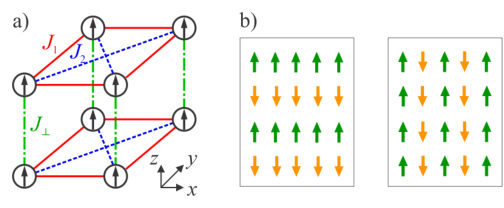
<figcaption class="paper-figure-caption"><b>Fig 1.</b> FIG. 1. a) Interactions of the layered J1 −J2 Ising model. b) Schematic of the stripe order in the xy plane in the low-temperature phase for |J2|/J1 &gt; 1/2 in the absence of quenched disorder. Stripes can be aligned with either the x direction or the y direction.</figcaption>
</figure>
<figure class="paper-figure-card">
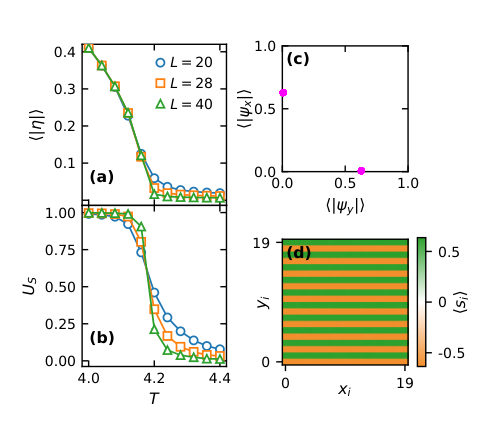
<figcaption class="paper-figure-caption"><b>Fig 2.</b> FIG. 2. Simulation results for the layered J1 −J2 Ising model without random field. (a) Nematic order parameter ⟨|η|⟩and (b) stripe Binder cumulant Us vs. temperature T from dif- ferent system sizes L. (c) ⟨|ψx|⟩vs. ⟨|ψy|⟩for 100 individual samples at T = 4.0. (d) Local magnetization ⟨Si⟩in a single layer of one sample at T = 4.0. Statistical errors in panels a) and (b) are below the symbol size.</figcaption>
</figure>
<figure class="paper-figure-card">
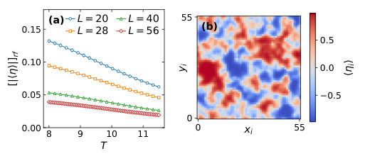
<figcaption class="paper-figure-caption"><b>Fig 3.</b> FIG. 4. (a) Nematic order parameter |⟨η⟩| vs. temperature T at W = 8 and ξd = 3, averaged over 1000 random-field configurations for system sizes L = 20, 28, 40 and 256 config- urations for L = 56. (b) Local nematic order parameter ⟨ηi⟩ in a single layer of one sample at T = 8.0. For ⟨ηi⟩&gt; 0, stripes locally align with the x direction, while ⟨ηi⟩&lt; 0 corresponds to stripes aligned with the y direction.</figcaption>
</figure>
<figure class="paper-figure-card">
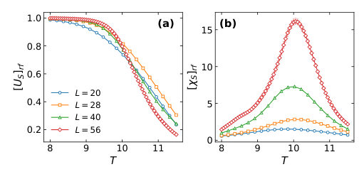
<figcaption class="paper-figure-caption"><b>Fig 4.</b> FIG. 3. (a) Stripe Binder cumulant [Us]rf and (b) stripe sus- ceptibility [χs]rf vs. temperature T. Random field strength W = 8 and correlation length ξd = 3. The data are aver- aged over 1000 random-field configurations for system sizes L = 20, 28, 40 and 256 configurations for L = 56. Statistical errors are shown but mostly smaller than the symbol size.</figcaption>
</figure>
<figure class="paper-figure-card">
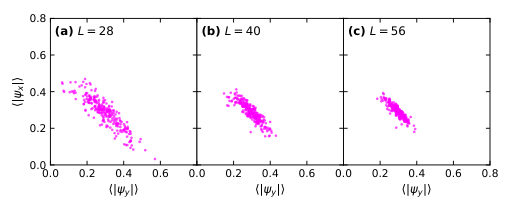
<figcaption class="paper-figure-caption"><b>Fig 5.</b> FIG. 5. ⟨|ψx|⟩vs. ⟨|ψy|⟩for 256 individual samples at T = 8.0, W = 8, and ξd = 3. Each dot represents one individual disorder configuration.</figcaption>
</figure>
</div>

<p><strong>Summary.</strong> This work introduces the 'implectic' phase, a new type of long-range order arising when random impurities locally break only partial symmetries. Using simulations on an Ising magnet model, the authors demonstrate that robust stripe order can emerge via the percolation of interwoven domain structures created by these random fields.</p>
<p><strong>Why it may be interesting.</strong> The concept of emergent long-range order from local symmetry breaking via random fields is highly relevant to understanding complex phase diagrams in frustrated quantum magnets and superconductors.</p>
<details>
<summary>Detailed structure</summary>
<p><strong>Main problem.</strong> The paper proposes a novel 'implectic' phase of long-range order that emerges in many-body systems due to random fields breaking only a subset of symmetries.</p>
<p><strong>Main result.</strong> Long-range stripe order can be established through the percolation of interwoven domain structures formed by local symmetry breaking, even when the primary nematic order parameter itself remains disordered.</p>
<p><strong>Method.</strong> The study relies heavily on large-scale Monte Carlo simulations to analyze phase transitions and order parameters in the presence of quenched random fields.</p>
<p><strong>Model / system.</strong> The model is a layered $J_1-J_2$ Ising magnet subjected to random-field disorder, which couples locally to a composite vestigial nematic order parameter. The system exhibits frustration ($J_1>0, J_2<0$).</p>
<p><strong>Key observables.</strong> Stripe Binder cumulant ($\langle U_s 
angle^{rf}$), stripe susceptibility ($\chi_s^{rf}$), and the local/global nematic order parameters ($\langle |\eta| 
angle^{rf}$).</p>
<p><strong>Important parameters / regimes.</strong> Disorder strength ($W$), system size ($L$), and dimensionality ($d \ge 3$) are crucial for observing this phase.</p>
<p><strong>Assumptions / limitations.</strong> The analysis assumes that the random field disorder locally breaks only a subset of symmetries, allowing for the formation of interwoven domain networks necessary for percolation.</p>
<p><strong>Figures summary.</strong> Figures demonstrate the divergence of stripe susceptibility and Binder cumulant at $T_c \approx 10$ in the presence of strong random fields ($W=8$), while local nematic order shows characteristic domain structures.</p>
<p><strong>Paper structure.</strong> The paper first defines the model and proposes the 'implectic' phase. It then uses Monte Carlo simulations to demonstrate the transition, showing that stripe order persists while the vestigial nematic order becomes localized into interwoven domains, leading to the proposed ordered state.</p>
</details>
<details>
<summary>Abstract</summary>
<p>We propose a distinct type of long-range ordered phase that can occur in classical and quantum many-particle systems. It is induced by impurities and defects that locally break a subset of the order-parameter symmetries, i.e., by random-field disorder that couples to a composite vestigial order parameter. The proposed ``implectic'' phase is characterized by spontaneous symmetry breaking on the background of the spatially interwoven domain structure created by the random fields. We explicitly demonstrate the existence of this phase in a layered $J_1-J_2$ Ising magnet by means of large-scale Monte Carlo simulations. We then discuss numerous potential applications in systems featuring charge and spin density wave order including frustrated magnets, cuprate and iron-based superconductors, and ultracold atoms.</p>
</details>
<p><sub><a href="#top">↑ back to top</a></sub></p>

<p><a id="paper-2607.11829"></a></p>
<h3 id="quantum-probe-advantage-in-learning-many-body-systems"><a href="http://arxiv.org/abs/2607.11829v1">Quantum probe advantage in learning many-body systems</a></h3>
<p><strong>Authors:</strong> Wenzheng Dong, Andrew G. Green, Vlatko Vedral, Jinzhao Sun<br>
<strong>Type:</strong> theory · <strong>Category:</strong> statistical mechanics · <strong>PDF:</strong> <a href="https://arxiv.org/pdf/2607.11829v1">https://arxiv.org/pdf/2607.11829v1</a><br>
<strong>Analysis basis:</strong> full PDF text, analyzed in chunks
<strong>Topic relevance:</strong> 🔥 <code>entanglement &amp; information structure</code> <strong>4/5</strong> · <code>analog quantum simulation</code> <strong>3/5</strong> · <code>non-equilibrium dynamics</code> <strong>3/5</strong> · <code>measurement-induced transitions</code> <strong>2/5</strong> · <code>non-equilibrium universality</code> <strong>2/5</strong> · <code>quantum measurements</code> <strong>2/5</strong> · <code>Keldysh / 2PI / non-Gaussian methods</code> <strong>1/5</strong> · <code>correlated / nonlocal dissipation</code> <strong>1/5</strong> · <code>driven-dissipative phase transition</code> <strong>1/5</strong> · <code>methods for driven-dissipative</code> <strong>1/5</strong></p>
<div class="figure-strip-hint">↔ Scroll figures horizontally</div>
<div class="paper-figures-scroll">
<figure class="paper-figure-card">
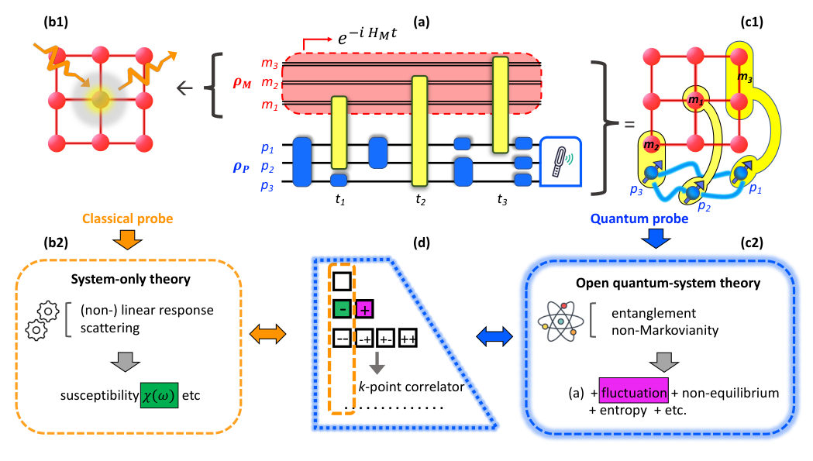
<figcaption class="paper-figure-caption"><b>Fig 1.</b> FIG. 1. Framework of quantum-probe learning: coherent ancillae turn spectroscopy into an open-system readout problem. (a) Quantum-circuit representation of the probe protocol: a controllable probe register ρP undergoes coherent control, couples through addressable channels p to selected matter operators Mm(p) in the target state ρM, and is finally measured so that information about matter is inferred from reduced probe observables. (b1)–(b2) Effective classical-probe regime: when the probe is treated as a prescribed perturbation rather than as a measured quantum subsystem, the circuit reduces to the target system alone; correspondingly, scattering leads to system-only response theory with...</figcaption>
</figure>
<figure class="paper-figure-card">
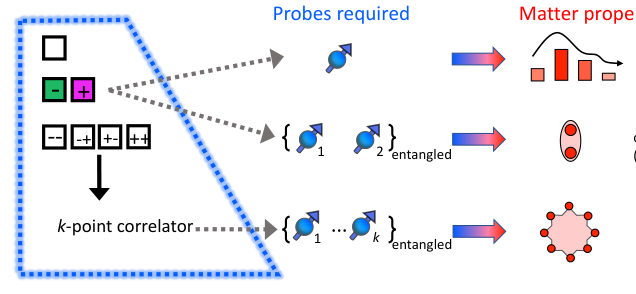
<figcaption class="paper-figure-caption"><b>Fig 2.</b> FIG. 2. Probe resources are set by correlator complexity, not system size. The left wedge represents the enlarged k-point correlator landscape opened by probe-based learning, with mixed commutator/anti-commutator sectors beyond the single retarded response branch. The middle column indicates the minimal probe resources needed to access different levels of many-body structure: a single probe already resolves fluctuations and statistical averages; two entangled probes suffice for quasi-free matter, where second-order correlators determine the relevant physics; and k entangled probes access genuinely interacting matter through kth-order correlator structure. The right column summarizes the...</figcaption>
</figure>
<figure class="paper-figure-card">
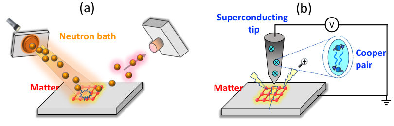
<figcaption class="paper-figure-caption"><b>Fig 3.</b> FIG. 3. Experimental setup of probe-based learning as special cases within our framework. (a) In a conventional beam- or bath-style probe, illustrated here by neutron scattering from matter, the external particles are usually treated as an imposed perturbation and scattering readout for system-only response: the measured signal is interpreted through matter susceptibilities and therefore through retarded commutator structures. This picture could be extended to non-linear spectroscopy. (b) A superconducting tip provides a different kind of interface. The tunnelling object can be a phase-coherent Cooper pair, so the probe itself is a quantum degree of freedom that can become entangled with...</figcaption>
</figure>
<figure class="paper-figure-card">
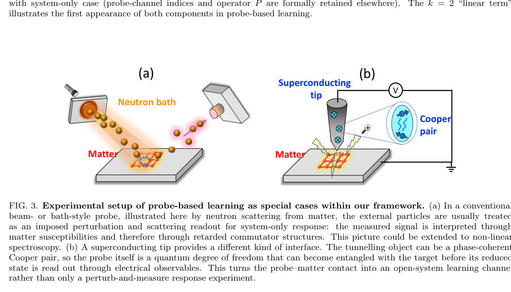
<figcaption class="paper-figure-caption"><b>Fig 4.</b> Figure 3 translates the algebraic distinction in Table I into a language closer to experiment. In a scattering or spectroscopy mindset, the external probe is often integrated out conceptually: it prepares a perturbation, the matter evolves, and the recorded signal is interpreted as a response function of the target alone. That viewpoint is powerful, but it naturally privileges the retarded sector. Probe-based learning asks for a more quantum use of the same experimental idea: keep the probe as a controllable subsystem, calibrate its coupling history, and use its final reduced readout as the data channel. The payoff is thus not only a stronger signal, but a larger operator alphabet for what...</figcaption>
</figure>
</div>

<p><strong>Summary.</strong> This work establishes that utilizing coherently controlled quantum probes allows researchers to learn about many-body properties—such as entropy and fluctuations—that are fundamentally inaccessible through traditional response functions. By treating the probe as an active quantum element, the authors open a vastly expanded operational learning framework for characterizing complex quantum matter.</p>
<p><strong>Why it may be interesting.</strong> It provides a powerful theoretical tool for designing experiments or simulations that can extract non-equilibrium information (like fluctuations and entanglement) from complex quantum matter systems using controlled probes.</p>
<details>
<summary>Detailed structure</summary>
<p><strong>Main problem.</strong> To determine which properties of a quantum many-body system are operationally accessible for learning or measurement beyond standard response theory.</p>
<p><strong>Main result.</strong> Coherently controlled quantum probes provide a strictly larger operational framework, allowing access to anti-commutators and entanglement entropy that are inaccessible via traditional methods.</p>
<p><strong>Method.</strong> The authors develop a unified quantum-circuit description comparing classical (perturbation) vs. quantum (coherent probe) readout channels to derive new correlator structures.</p>
<p><strong>Model / system.</strong> The framework models the interaction between a target many-body system (M) and an explicitly controlled quantum probe register (P), described by a time-dependent Hamiltonian H(t).</p>
<p><strong>Key observables.</strong> Anti-commutators, mixed-order correlators, fluctuations, non-equilibrium structure, entanglement entropy (e.g., von Neumann entropy).</p>
<p><strong>Important parameters / regimes.</strong> The complexity of the target correlations ($k$), which dictates probe resource scaling; time evolution parameters ($\Gamma(T), \Phi(T)$).</p>
<p><strong>Assumptions / limitations.</strong> The advantage relies on treating the probe as an explicit, coherently controlled quantum system rather than just a classical external perturbation.</p>
<p><strong>Figures summary.</strong> Figures illustrate the comparison between limited response theory (commutator sector) and the broader learning space opened by quantum probes (mixed commutator/anti-commutator sectors), alongside resource scaling based on correlation order.</p>
<p><strong>Paper structure.</strong> The paper progresses from defining the limitations of system-only response theory to introducing the quantum probe framework, deriving mathematical expressions linking probe dynamics to specific correlators ($  ext{M}<em>+,   ext{M}</em>-$), and finally demonstrating access to entropy reconstruction.</p>
</details>
<details>
<summary>Abstract</summary>
<p>Which properties of a quantum many-body system are operationally accessible is a central question underlying spectroscopy, thermodynamics, and quantum information science. Conventional response theory answers this question within a system-only paradigm: one perturbs and measures the matter itself, obtaining susceptibility built from causally ordered nested commutators. Here we show that coherently controlled quantum probes, when measured at the end, define a strictly larger operational learning framework beyond that accessible from response theory. We establish this through a quantum-circuit description that unifies spectroscopy, probe microscopy, and probe-based quantum technologies within a common operational framework, from which we develop quantum protocols for learning many-body properties from probe readout only. This advantage arises because the reduced dynamics of quantum probes generically encode anti-commutator and mixed-order correlators of the target; therefore, measurements on the probe provide access to fluctuations, non-equilibrium structure, and entanglement entropy that are in general not accessible through response functions or a single probe alone. Moreover, we demonstrate that entangled probes can access many-body properties such as von Neumann entropy. We prove that the required probe resources scale with the complexity of the target correlations rather than with the size of the many-body system. Quantum probes are therefore not merely more sensitive sensors but provide a new way to learn many-body properties distinct from those of tomography or quantum simulation.</p>
</details>
<p><sub><a href="#top">↑ back to top</a></sub></p>

<p><a id="paper-2607.11882"></a></p>
<h3 id="an-efficient-algorithm-for-approximate-shadow-hamiltonian-simulation"><a href="http://arxiv.org/abs/2607.11882v1">An efficient algorithm for approximate shadow Hamiltonian simulation</a></h3>
<p><strong>Authors:</strong> Abhijit Chakraborty, Bharath Sambasivam, Karunya Shirali, Hunter Nelson, Mafalda Ramôa, Sophia E. Economou, Edwin Barnes<br>
<strong>Type:</strong> theory · <strong>Category:</strong> quantum information and computing · <strong>PDF:</strong> <a href="https://arxiv.org/pdf/2607.11882v1">https://arxiv.org/pdf/2607.11882v1</a><br>
<strong>Analysis basis:</strong> full PDF text, analyzed in chunks
<strong>Topic relevance:</strong> 🔥 <code>entanglement &amp; information structure</code> <strong>4/5</strong> · <code>analog quantum simulation</code> <strong>3/5</strong> · <code>methods for driven-dissipative</code> <strong>3/5</strong> · <code>non-equilibrium dynamics</code> <strong>3/5</strong> · <code>non-equilibrium universality</code> <strong>2/5</strong> · <code>Keldysh / 2PI / non-Gaussian methods</code> <strong>1/5</strong> · <code>correlated / nonlocal dissipation</code> <strong>1/5</strong> · <code>driven-dissipative phase transition</code> <strong>1/5</strong> · <code>exotic spin models in light-matter</code> <strong>1/5</strong></p>
<div class="figure-strip-hint">↔ Scroll figures horizontally</div>
<div class="paper-figures-scroll">
<figure class="paper-figure-card">
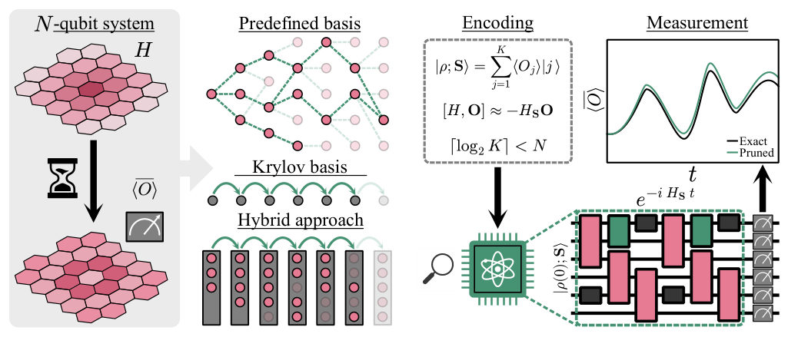
<figcaption class="paper-figure-caption"><b>Fig 1.</b> FIG. 1: Schematic of the pruned shadow Hamiltonian simulation algorithm to approximately simulate the evolution of the observable ¯O under an N-qubit Hamiltonian, H. Three schemes (predefined basis, Krylov basis, and hybrid) can be used to build a shadow operator basis S containing important operators to ¯O under commutation with H. The shadow state encodes the expectation values of these observables on the physical state and can provide a more efficient mapping onto ⌈log2 K⌉&lt; N qubits. The shadow state is evolved by the shadow Hamiltonian HS, and measured in the computational basis to obtain the approximate real-time evolution of ¯O.</figcaption>
</figure>
<figure class="paper-figure-card">
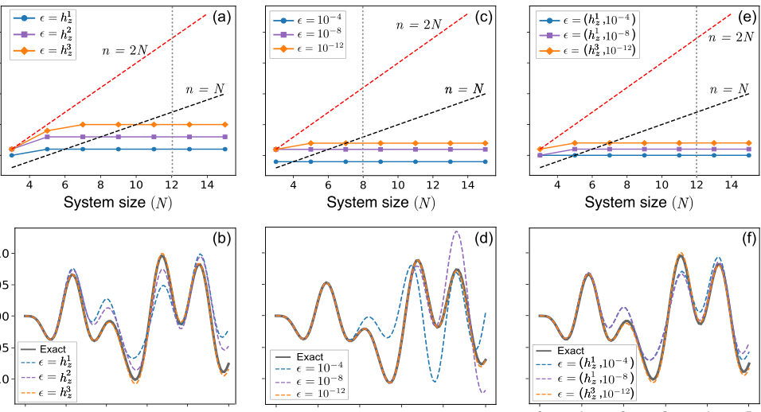
<figcaption class="paper-figure-caption"><b>Fig 2.</b> FIG. 2: Pruned shadow Hamiltonian simulation of the 1D MFIM with hz = 0.3. (a,b) Results for the predefined Pauli-basis pruning scheme. Panel (a) shows the required shadow-register size as a function of system size for different pruning thresholds ϵ, using the central-site Z operator as the target observable. The saturation of the register size indicates that, for fixed ϵ, the magnetization dynamics of arbitrarily large systems can be simulated with a constant number of register qubits. The red dashed line indicates the scaling of the number of qubits needed to perform exact shadow Hamiltonian simulation. The gray dotted line marks the system size used in panel (b), which shows the...</figcaption>
</figure>
<figure class="paper-figure-card">
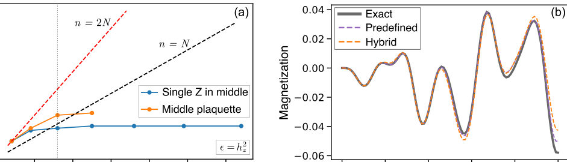
<figcaption class="paper-figure-caption"><b>Fig 3.</b> FIG. 3: Pruning methods applied to the 2D MFIM with hz = 0.2 and ϵ = h2 z. (a) The scaling of shadow register size with system size is shown for two different root observables (single-weight Z in the middle site index and middle plaquette observable Zx,yZx+1,yZx+1,y+1Zx,y+1) of interest at a fixed pruning threshold ϵ = h2 z. (b) Average magnetization for a 2D MFIM for a 4 × 4 (16 qubits) square grid. The dynamics of magnetization is calculated for an initial state |0⟩⊗N/2 ⊗|1⟩⊗N/2. The shadow time evolution can be simulated with 14 qubits (purple dashed line) using the predefined basis pruning method with parallelization, demonstrating a savings in quantum resources. Due to the exponential...</figcaption>
</figure>
<figure class="paper-figure-card">
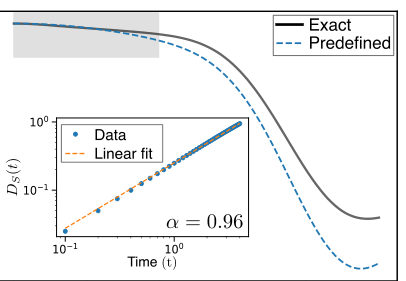
<figcaption class="paper-figure-caption"><b>Fig 4.</b> FIG. 4: Study of a two-point correlator using pruned shadow simulation. The spin current autocorrelation function is plot- ted with time for a 12-qubit Heisenberg XXZ model with Jz = 0.05 (ballistic regime). Jd is the current across the domain wall and J(t) is the total spin current. The shaded region shows the physically meaningful regime before bound- ary effects due to the finite system size become significant, which is also used to extract the scaling of the diffusion co- efficient DS(t) (inset). The scaling α = 0.96 is close to the expected value of α = 1 in the ballistic regime. To perform the shadow simulation (with up to 10 qubits), the predefined Pauli basis pruning scheme is used with a...</figcaption>
</figure>
<figure class="paper-figure-card">
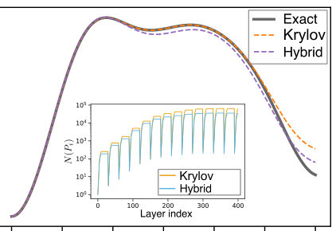
<figcaption class="paper-figure-caption"><b>Fig 5.</b> FIG. 5: Study of a four-point correlator using the pruned shadow Hamiltonian method. The behavior of the OTOC (W ≡Z1, V ≡X1) with time is shown for a system size N = 5 for the LFXXZ model with J = hz = 1.0, Jz = 0.3 with the characteristic fast growth at early times. The cutoff used for the Krylov basis pruning scheme is ϵ2 = J8 z with an additional Pauli pruning cutoffof ϵ1 = J6 z for the hybrid scheme. The inset shows the number of Pauli strings, N(Pi), appearing in the i-th operator of the Krylov basis. The two- step pruning procedure of the hybrid method results in lower number of Pauli strings contained in each operator, leading to a reduced cost for storing the Krylov vectors and shadow...</figcaption>
</figure>
</div>

<p><strong>Summary.</strong> The paper presents an advanced algorithm to simulate the time evolution of observables in complex quantum many-body systems by employing shadow Hamiltonian simulation. It introduces three pruning techniques—predefined basis, Krylov basis, and hybrid—to drastically reduce the size of the required operator algebra representation. This efficiency improvement makes simulating dynamics for interacting systems feasible on current or near-future quantum hardware.</p>
<p><strong>Why it may be interesting.</strong> This work directly addresses resource scaling in simulating quantum dynamics for interacting systems, which is a major bottleneck in both theoretical condensed matter physics and practical quantum computing simulations.</p>
<details>
<summary>Detailed structure</summary>
<p><strong>Main problem.</strong> Developing an efficient algorithm for approximate shadow Hamiltonian simulation to track the real-time dynamics of observables under time-independent Hamiltonians.</p>
<p><strong>Main result.</strong> The proposed hybrid pruning scheme significantly reduces the required qubit register size compared to pure Krylov or predefined basis methods, enabling simulations on larger systems.</p>
<p><strong>Method.</strong> It uses a targeted approximation by constructing a pruned operator algebra ($ar{S}_O$) based on three schemes: predefined basis, adaptive Krylov basis, and a hybrid combination of both.</p>
<p><strong>Model / system.</strong> The method is benchmarked using lattice spin systems in one and two dimensions, applicable to general many-body Hamiltonians like the MFIM or PLIM.</p>
<p><strong>Key observables.</strong> Time evolution expectation values $\langle ar{O}(t) 
angle$, higher-order correlation functions, and Out-of-Time-Ordered Correlators (OTOCs).</p>
<p><strong>Important parameters / regimes.</strong> Truncation thresholds ($\epsilon, \epsilon_1, \epsilon_2$), system size ($N$), and the ratio of field strengths to interaction couplings ($h_z$ vs $J$).</p>
<p><strong>Assumptions / limitations.</strong> The core assumption is that restricting the operator basis to elements relevant to the target observable yields a sufficiently accurate approximation, overcoming the exponential growth bottleneck.</p>
<p><strong>Figures summary.</strong> Figures illustrate the three pruning schemes (FIG. 1), compare shadow register size scaling across methods (TABLE I), and show accuracy vs. system size or field strength effects in MFIM simulations (Figs. S2-S4).</p>
<p><strong>Paper structure.</strong> The paper introduces the problem, details the mathematical framework of shadow simulation, proposes and analyzes three basis construction/pruning schemes (Predefined, Krylov, Hybrid), benchmarks these methods on lattice spin models, and discusses parameter regimes where pruning efficiency breaks down.</p>
</details>
<details>
<summary>Abstract</summary>
<p>We propose an efficient algorithm based on shadow Hamiltonian simulation to approximately simulate the real-time dynamics of observables under time-independent Hamiltonians. Shadow Hamiltonian simulation works at the level of the operator algebra generated by the observables through commutators with the Hamiltonian. Exactly encoding the quantum state in this picture is generally inefficient for interacting systems due to the exponential growth of the operator algebra. Our algorithm overcomes this bottleneck by systematically identifying the elements of the algebra most relevant to the target observables. This targeted approach is a controlled approximation that yields a highly efficient quantum state encoding that substantially reduces the size of the qubit register required to perform the time evolution using the shadow Hamiltonian. We propose two main pruning schemes, one based on a predefined operator basis and another on a constructed Krylov basis. We also present a hybrid scheme that builds a Krylov basis within a pruned algebra in the predefined basis. We benchmark our algorithm using lattice spin systems in one and two dimensions, for both one- and higher-point correlators as observables.</p>
</details>
<p><sub><a href="#top">↑ back to top</a></sub></p>

<p><a id="paper-2607.11282"></a></p>
<h3 id="barium-based-rydberg-atom-quantum-technologies-with-long-rydberg-coherence"><a href="http://arxiv.org/abs/2607.11282v1">Barium-based Rydberg atom quantum technologies with long Rydberg coherence</a></h3>
<p><strong>Authors:</strong> Xiao-Feng Shi<br>
<strong>Type:</strong> both · <strong>Category:</strong> other · <strong>PDF:</strong> <a href="https://arxiv.org/pdf/2607.11282v1">https://arxiv.org/pdf/2607.11282v1</a><br>
<strong>Analysis basis:</strong> full PDF text, analyzed in chunks
<strong>Topic relevance:</strong> 🔥 <code>QC/QI experiment</code> <strong>4/5</strong> · 🔥 <code>analog quantum simulation</code> <strong>4/5</strong> · <code>Rydberg arrays</code> <strong>3/5</strong> · <code>non-equilibrium dynamics</code> <strong>2/5</strong> · <code>quantum optics experiment</code> <strong>2/5</strong> · <code>correlated / nonlocal dissipation</code> <strong>1/5</strong> · <code>driven-dissipative phase transition</code> <strong>1/5</strong> · <code>entanglement &amp; information structure</code> <strong>1/5</strong> · <code>interference shaping light</code> <strong>1/5</strong></p>
<div class="figure-strip-hint">↔ Scroll figures horizontally</div>
<div class="paper-figures-scroll">
<figure class="paper-figure-card">
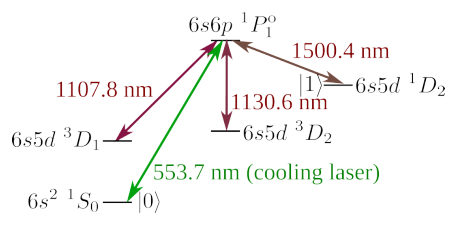
<figcaption class="paper-figure-caption"><b>Fig 1.</b> FIG. 1. Level scheme of the cooling and magneto-optical trap- ping of barium atoms used in Ref. [57]. The level spacing is not to scale.</figcaption>
</figure>
<figure class="paper-figure-card">
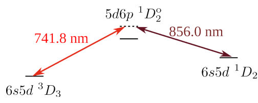
<figcaption class="paper-figure-caption"><b>Fig 2.</b> FIG. 2. Level scheme of population transfer between |1⟩ and 6s5d 3D3 in Eq. (2). During idle time in a quantum circuit, e.g., between the execution of two quantum gates, a fast population transfer can be used so that the population in |1⟩can be shelved on the long-lived 6s5d 3D3 state. After the idle time, the reverse population transfer back to |1⟩can be similarly realized.</figcaption>
</figure>
<figure class="paper-figure-card">
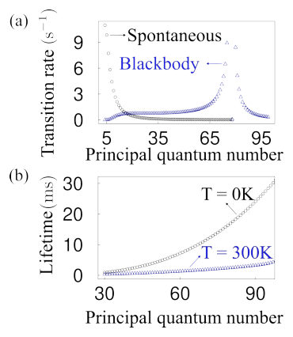
<figcaption class="paper-figure-caption"><b>Fig 3.</b> FIG. 3. (a) Round and triangle symbols denote spontaneous emission rate and black-body-induced radiation rate from 6s78g 1G4 to 6snf 1F o 3 and 6snh 1Ho 5, respectively. The round symbols disappear beyond principal quantum num- ber 78 for spontaneous emission only takes atom to a lower state. (b) Round and triangle symbols denote 1/Γ0 and 1/(Γ0 + ΓBBR), respectively, where blackbody transition to states up to n = 100 is included.</figcaption>
</figure>
<figure class="paper-figure-card">
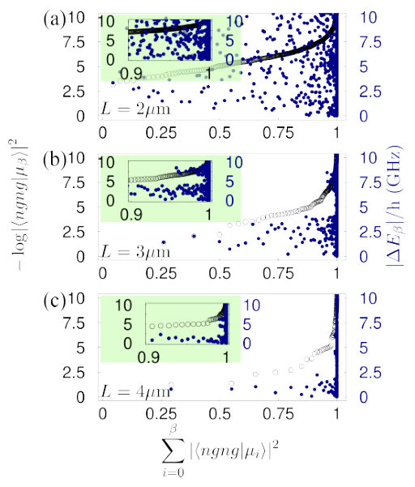
<figcaption class="paper-figure-caption"><b>Fig 4.</b> FIG. 5. Illustration of eigenstates of the dipole-dipole Hamil- tonian for the state |ngng⟩, where the empty and filled circles represent −log|⟨ngng|µβ⟩|2 and the pair-state energy ∆E as a function of sβ = Pβ i=0|⟨ngng|µi⟩|2. The states are ordered with descending |⟨ngng|µβ⟩|2. The internuclear separation is 2, 3, and 4 µm in (a, b), and (c), respectively. The insets show the data near the region of sβ = 1, which shows that |µβ⟩with small ∆Eβ has small population. Here, the states have |mj| = 4 for they can be more useful for being less sen- sitive to noise of electric field [67].</figcaption>
</figure>
<figure class="paper-figure-card">
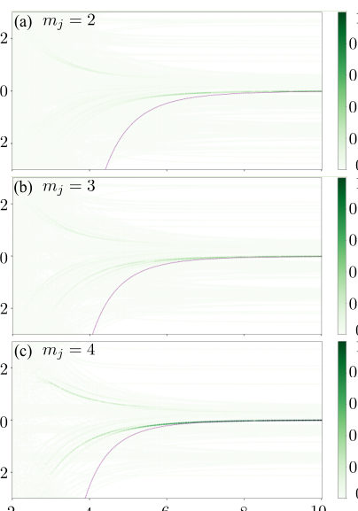
<figcaption class="paper-figure-caption"><b>Fig 5.</b> FIG. 4. Interaction strengths of the dipole-dipole interaction between two atoms in the state |ngng⟩≡|6sng 1G4, mj⟩⊗ |6sng 1G4, mj⟩with mj = 2, 3, and 4 in (a), (b), and (c), respectively. Here n = 78 is taken as an example because it is the highest 1G4 barium state with the energy measured [53]. Here θ = 0, the calculation was via ARPACK [111], and states within 25 GHz from |ngng⟩, |∆n| ≤4, and s, p, · · · , i, k- orbitals are included. The purple dashed curve shows the asymptotic van der Waals scaling C6/L6 with perturbatively calculated C6.</figcaption>
</figure>
</div>

<p><strong>Summary.</strong> The paper presents an advancement in Rydberg-mediated quantum technologies using barium atoms, overcoming the primary limitation of short Doppler-limited coherence times. By employing a specific two-photon excitation scheme, they achieve significantly enhanced coherence and utilize the inherent long lifetimes and strong dipole interactions of the resulting Rydberg states for robust quantum information processing.</p>
<p><strong>Why it may be interesting.</strong> This work directly tackles a major bottleneck in neutral atom quantum simulation—decoherence—by leveraging atomic structure specifics (barium's electronic levels) and advanced laser control techniques. The combination of long coherence time with strong interactions makes it highly relevant for building scalable quantum processors.</p>
<details>
<summary>Detailed structure</summary>
<p><strong>Main problem.</strong> The short Doppler-limited coherence time of laser-excited Rydberg states severely limits their utility in Rydberg-mediated quantum technologies.</p>
<p><strong>Main result.</strong> By using a two-photon excitation scheme with barium atoms, the authors effectively remove Doppler-limited decoherence and demonstrate long coherence times for the $   ext{6s}n    ext{g } 1G_4$ state. This system also benefits from strong dipole interactions and long radiative lifetimes.</p>
<p><strong>Method.</strong> The work proposes a two-photon excitation scheme using counter-propagating lasers to achieve a small effective wavevector, which suppresses Doppler broadening effects on the coherence time.</p>
<p><strong>Model / system.</strong> The platform utilizes neutral Barium atoms ($   ext{Ba}$), defining qubits between the ground state and a metastable $d$-orbital clock state. Rydberg excitations are achieved via two-photon transitions to highly excited states like $   ext{6s}n    ext{g } 1G_4$.</p>
<p><strong>Key observables.</strong> Rydberg coherence time ($T_{2,D}$), radiative lifetimes (e.g., $\sim 7.1 	ext{ ms}$ for $n=60$), and the strength of dipole-dipole interactions.</p>
<p><strong>Important parameters / regimes.</strong> The effective two-photon wavevector ($  ext{k} \approx 0.14\ \mu    ext{m}^{-1}$) is crucial, leading to a predicted coherence time enhancement by $\sim 47$ times compared to Rb/Cs at similar temperatures.</p>
<p><strong>Assumptions / limitations.</strong> The analysis assumes that the two-photon excitation scheme successfully mitigates Doppler broadening and that the intrinsic properties of the Rydberg state (like small Förster defect) dominate decoherence mechanisms.</p>
<p><strong>Figures summary.</strong> Figure 1 illustrates the level scheme for MOT trapping, while Figure 2 details the level scheme for coherent population transfer involving a long-lived shelving state in barium atoms.</p>
<p><strong>Paper structure.</strong> The paper addresses the limitations of existing Rydberg systems by proposing and analyzing a specific two-photon excitation mechanism using barium. It details the resulting coherence enhancement and discusses the favorable properties (long lifetime, strong interaction) that enable quantum computing applications.</p>
</details>
<details>
<summary>Abstract</summary>
<p>The short Doppler-limited coherence time of the laser-excited Rydberg state, usually orders of magnitude shorter than the lifetime of the Rydberg state, hinders the Rydberg-mediated quantum technologies. Here, we show that a 649~nm~$-$~658~nm two-photon excitation of the $6sng~^1G_4$ Rydberg state from a long-lived d-orbital clock state of barium can be achieved with a two-photon wavevector that is tiny, which effectively removes the Doppler-limited decoherence. Moreover, the $6sng~^1G_4$ Rydberg state has strong dipole-dipole interaction due to small Förster defect with nearby Rydberg states and possesses long radiative lifetime. These can benefit quantum computing based on individually trapped neutral atoms, and can enable long-lived Rydberg polaritons in atomic media, which brings fresh opportunities in all-optical quantum information.</p>
</details>
<p><sub><a href="#top">↑ back to top</a></sub></p>

<p><a id="paper-2607.09875"></a></p>
<h3 id="revealing-entanglement-growth-mechanisms-through-the-magic-barrier"><a href="http://arxiv.org/abs/2607.09875v1">Revealing Entanglement-Growth Mechanisms through the Magic Barrier</a></h3>
<p><strong>Authors:</strong> Lv Zhang, Shi-Xin Zhang, Heng Fan, Shuo Liu<br>
<strong>Type:</strong> theory · <strong>Category:</strong> other · <strong>PDF:</strong> <a href="https://arxiv.org/pdf/2607.09875v1">https://arxiv.org/pdf/2607.09875v1</a><br>
<strong>Analysis basis:</strong> full PDF text, analyzed in chunks
<strong>Topic relevance:</strong> 🔥 <code>entanglement &amp; information structure</code> <strong>4/5</strong> · 🔥 <code>non-equilibrium dynamics</code> <strong>4/5</strong> · <code>non-equilibrium universality</code> <strong>3/5</strong> · <code>analog quantum simulation</code> <strong>2/5</strong> · <code>scars &amp; prethermalization</code> <strong>2/5</strong> · <code>correlated / nonlocal dissipation</code> <strong>1/5</strong> · <code>driven-dissipative phase transition</code> <strong>1/5</strong> · <code>exotic spin models in light-matter</code> <strong>1/5</strong> · <code>methods for driven-dissipative</code> <strong>1/5</strong></p>
<div class="figure-strip-hint">↔ Scroll figures horizontally</div>
<div class="paper-figures-scroll">
<figure class="paper-figure-card">
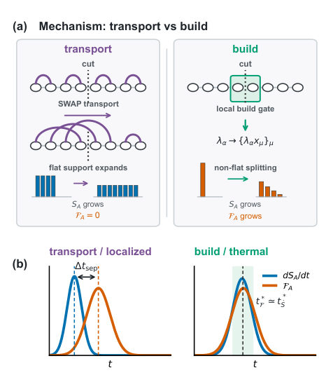
<figcaption class="paper-figure-caption"><b>Fig 1.</b> FIG. 1. Schematic of build- and transport-dominated entan- glement growth. (a) Transport redistributes pre-existing en- tanglement across the cut and can increase SA through an approximately flat Schmidt block, producing little or no anti- flatness. Local build processes instead split Schmidt sectors nonuniformly, generating FA while increasing SA. (b) Conse- quently, transport-dominated dynamics can separate the peak of ˙SA from the magic-barrier peak of FA, whereas build- dominated dynamics keeps the two peaks in the same time window.</figcaption>
</figure>
<figure class="paper-figure-card">
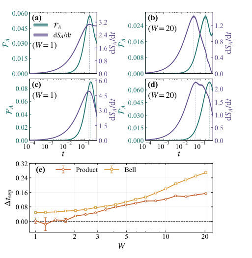
<figcaption class="paper-figure-caption"><b>Fig 2.</b> FIG. 2. Dynamics of anti-flatness and entropy growth in the random-field XXZ chain. The half-chain anti-flatness FA (green) and entropy-growth rate ˙SA (purple) are shown for W = 1 [(a),(c)] and W = 20 [(b),(d)] at system size L = 14. The upper row uses random product initial states in the half-filling sector, while the middle row uses Bell-pair initial states with no Bell pair crossing either half-chain bipartition boundary. Vertical dashed lines mark the corresponding peak positions t∗ F and t∗ ˙S. All data are averaged over at least 1500 disorder realizations. (e) Peak separation ∆tsep = t∗ F −t∗ ˙S versus disorder strength W for product and Bell-pair initial states.</figcaption>
</figure>
<figure class="paper-figure-card">
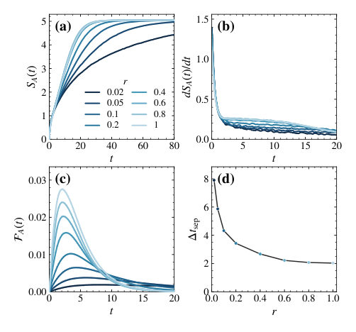
<figcaption class="paper-figure-caption"><b>Fig 3.</b> FIG. 3. Random-circuit benchmark initialized from Bell pairs. At each elementary update, a randomly chosen nearest- neighbor bond is acted on by a SWAP gate with probability 1 −r or by a Haar random two-qubit gate with probability r. The panels show SA(t), ˙SA(t), FA(t), and the peak sep- aration ∆tsep for L = 16. Increasing the Haar-gate fraction strengthens local build processes and pulls the magic-barrier peak toward the early entropy-growth window, thereby reduc- ing ∆tsep.</figcaption>
</figure>
</div>

<p><strong>Summary.</strong> The paper introduces the concept of 'magic barrier' anti-flatness as a diagnostic tool to probe how entanglement grows dynamically. By analyzing the time separation between this spectral feature and the peak entropy growth rate, the authors successfully distinguish between mechanisms where entanglement is locally built versus those where it is merely transported or redistributed in many-body systems.</p>
<p><strong>Why it may be interesting.</strong> This work provides a powerful spectral diagnostic tool ($\Delta t_{	ext{sep}}$) to distinguish fundamental physical processes (local scrambling vs. global transport) in interacting quantum many-body systems, which is highly relevant for understanding thermalization and localization dynamics.</p>
<details>
<summary>Detailed structure</summary>
<p><strong>Main problem.</strong> The study aims to elucidate the dynamical relationship between bipartite entanglement growth and quantum magic (nonstabilizerness) in complex many-body systems.</p>
<p><strong>Main result.</strong> The relative timescale separation ($\Delta t_{	ext{sep}}$) between the peak of entropy growth rate and the 'magic barrier' peak serves as a diagnostic tool, distinguishing between local build mechanisms and entanglement transport/redistribution processes.</p>
<p><strong>Method.</strong> Theoretical analysis using quench dynamics simulations on random-field spin chains and controlled benchmarking with tunable random quantum circuits.</p>
<p><strong>Model / system.</strong> The primary model is the random-field XXZ chain, which is studied across a crossover from thermal to Many-Body Localized (MBL) regimes. Benchmarking uses random circuits simulating local building versus pure transport dynamics.</p>
<p><strong>Key observables.</strong> Bipartite von Neumann entropy ($S_A$), its growth rate ($\dot{S}_A(t)$), and the anti-flatness of the entanglement spectrum ($F_A(t)$).</p>
<p><strong>Important parameters / regimes.</strong> Disorder strength ($W$) controlling the thermal-MBL crossover, and a tunable parameter ($r$ or $p$) controlling the balance between local building (Haar gates) and transport (SWAP gates).</p>
<p><strong>Assumptions / limitations.</strong> The analysis assumes that entanglement growth can be decomposed into distinct mechanisms: local generation ('build') versus non-local movement ('transport').</p>
<p><strong>Figures summary.</strong> Figures illustrate how $\dot{S}_A(t)$ and $F_A(t)$ peak times separate ($\Delta t_{	ext{sep}}$ increases) as disorder grows or when transport dominates, contrasting with the strong correlation seen in local build scenarios.</p>
<p><strong>Paper structure.</strong> The paper establishes the theoretical link between entanglement and magic via $\Delta t_{	ext{sep}}$, applies this diagnostic to the random-field XXZ chain across different disorder regimes, and validates the framework using controlled random circuit simulations that tune the relative contributions of building versus transporting quantum information.</p>
</details>
<details>
<summary>Abstract</summary>
<p>Quantum entanglement and magic are complementary resources underlying quantum computational advantage, yet their dynamical relation in many-body systems remains poorly understood. In this Letter, we show that the mechanism of bipartite entanglement growth is encoded in the relative timescale between the entropy-growth-rate peak and the magic barrier, defined as the transient peak of the anti-flatness of the entanglement spectrum. When entanglement is locally built, the same microscopic process increases the entropy and reshapes the Schmidt spectrum, so the magic-barrier peak occurs in the time window of maximal entropy growth. When entanglement is mainly transported or redistributed, entropy can grow before appreciable spectral non-flatness is generated, naturally separating the two peak times. We demonstrate this distinction in the random-field XXZ chain: the two peaks remain strongly correlated in the thermal regime, while their separation grows systematically across the thermal--MBL crossover. We further validate this theoretical framework by employing Bell-pair initial states alongside a tunable SWAP--Haar random circuit. Our results reveal an intrinsic dynamical connection between entanglement and magic, establishing the magic barrier as a powerful spectral diagnostic of how quantum information is generated, transported, and reshaped.</p>
</details>
<p><sub><a href="#top">↑ back to top</a></sub></p>

<p><a id="paper-2607.11284"></a></p>
<h3 id="experimental-observation-of-anomalous-complementary-weak-values-from-correlated-pairwise-two-state-vectors"><a href="http://arxiv.org/abs/2607.11284v1">Experimental Observation of Anomalous Complementary Weak Values from Correlated Pairwise Two-State Vectors</a></h3>
<p><strong>Authors:</strong> Qian Xie, Liang Xu, Lijian Zhang<br>
<strong>Type:</strong> experiment · <strong>Category:</strong> quantum information and computing · <strong>PDF:</strong> <a href="https://arxiv.org/pdf/2607.11284v1">https://arxiv.org/pdf/2607.11284v1</a><br>
<strong>Analysis basis:</strong> full PDF text, analyzed in chunks
<strong>Topic relevance:</strong> 🔥 <code>QC/QI experiment</code> <strong>4/5</strong> · 🔥 <code>quantum measurements</code> <strong>4/5</strong> · <code>quantum optics experiment</code> <strong>3/5</strong> · <code>measurement-induced transitions</code> <strong>2/5</strong> · <code>analog quantum simulation</code> <strong>1/5</strong> · <code>correlated / nonlocal dissipation</code> <strong>1/5</strong> · <code>driven-dissipative phase transition</code> <strong>1/5</strong> · <code>entanglement &amp; information structure</code> <strong>1/5</strong> · <code>interference shaping light</code> <strong>1/5</strong></p>
<div class="figure-strip-hint">↔ Scroll figures horizontally</div>
<div class="paper-figures-scroll">
<figure class="paper-figure-card">
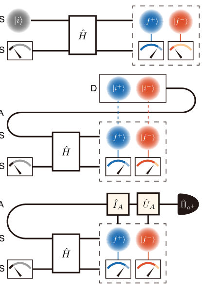
<figcaption class="paper-figure-caption"><b>Fig 1.</b> FIG. 1. Schematic diagrams. (a) Standard WV measurement. (b) PCTC-powered WV measurement. (c) Post-selection- controlled WV measurement structure.</figcaption>
</figure>
<figure class="paper-figure-card">
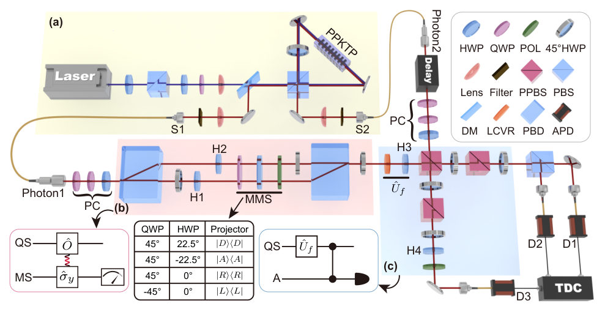
<figcaption class="paper-figure-caption"><b>Fig 2.</b> FIG. 2. Experimental Setup. (a) A continuous-wave laser at 405 nm pumps a periodically poled KTiOPO4 (PPKTP) crystal in the Sagnac interferometer, enabling spontaneous parametric down-conversion to prepare a two-photon polarization-entangled state. (b) Measurement of the WVs. (c) The post-selection-controlled structure, composed of ˆUf, a controlled-Z gate followed by a projective measurement on the ancilla. Abbreviations: DM, dichroic mirror; APD, avalanche photodiode; TDC, time-to- digital converter.</figcaption>
</figure>
<figure class="paper-figure-card">
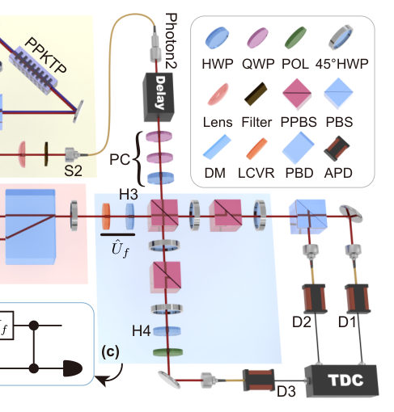
<figcaption class="paper-figure-caption"><b>Fig 3.</b> Figure 2 (b) illustrates the experimental setup for WV measurement. First, a polarizing beam displacer (PBD) maps the polarization-encoded QS to spatial modes: |H⟩→|0⟩(upper path) and |V ⟩→|1⟩(lower path). A HWP at 45◦in path 1 initializes both paths in the same polarization state |H⟩, which serves as the MS. The QS observable is taken to be ˆO = −ˆσz. The coupling Hamil- tonian ˆH = −gˆσz ⊗ˆσy is realized by rotating H1 (in path 1) to g/2 degrees and H2 (in path 0) to −g/2 degrees. Since the measurements on the MS (MMS) and post- selection of the QS act on separate Hilbert spaces, they commute and can be performed independently. By fixing all polarizers (POLs) at 0◦, MMS are performed...</figcaption>
</figure>
<figure class="paper-figure-card">
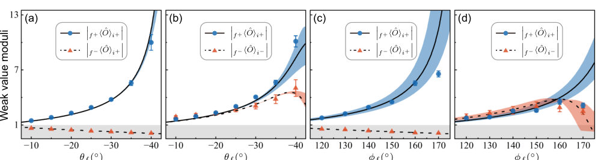
<figcaption class="paper-figure-caption"><b>Fig 4.</b> FIG. 3. Experimentally measured moduli of complementary WVs. (a, b) Real WVs in the standard and post-selection- controlled protocols. (c, d) Imaginary WVs in the standard and post-selection-controlled protocols. Solid and dashed curves show theoretical predictions. Colored regions represent simulated errors assuming a phase instability of ±5◦in the PBD interferometer. Blue circles and red triangles indicate moduli of WVs post-selected on |f +⟩and |f −⟩, respectively. Error bars represent one standard deviation derived from Poissonian counting statistics and are smaller than the markers when not visible.</figcaption>
</figure>
</div>

<p><strong>Summary.</strong> The paper presents an experimental method to observe anomalous complementary weak values that are otherwise inaccessible due to low success probabilities. By actively controlling post-selection using entangled photon pairs, the authors demonstrate a robust protocol that significantly enhances the measurement of time-symmetric quantum structures in photonic systems.</p>
<p><strong>Why it may be interesting.</strong> This work directly addresses fundamental limitations in measuring non-classical quantum effects like anomalous weak values by engineering measurement conditions, which is highly relevant to advanced quantum metrology and foundational quantum optics.</p>
<details>
<summary>Detailed structure</summary>
<p><strong>Main problem.</strong> The primary challenge is overcoming the low success probability associated with observing anomalous weak values (WVs) in standard time-symmetric quantum measurements.</p>
<p><strong>Main result.</strong> The authors successfully demonstrated a post-selection-controlled protocol that enables the experimental observation of anomalous complementary WVs, significantly exceeding bounds set by standard measurement techniques.</p>
<p><strong>Method.</strong> They employ a technique utilizing quantum entanglement and controlled unitary operations to actively engineer correlated pairwise two-state vectors, allowing access to mutually exclusive post-selection branches.</p>
<p><strong>Model / system.</strong> The experiment is implemented on a photonic platform using two-photon polarization-entangled states generated via SPDC. The formalism relies on the Time-Symmetric Two-State Vector Formalism (TSVF).</p>
<p><strong>Key observables.</strong> Anomalous complementary weak values ($f^\pm\langle\hat{O}
angle_{w}^{i\pm}$), success probabilities, and Hong-Ou-Mandel interference visibility.</p>
<p><strong>Important parameters / regimes.</strong> The anomalous WVs are analyzed in regimes yielding real or purely imaginary results based on relative phase tuning ($   heta_i -    heta_f  o \pi/2$ or $\phi_i - \phi_f 	o \pi$).</p>
<p><strong>Assumptions / limitations.</strong> The analysis assumes the ability to implement controlled unitary operations and relies on comparing measured values against theoretical bounds derived from Cauchy-Schwarz inequalities.</p>
<p><strong>Figures summary.</strong> Figures compare standard vs. post-selection-controlled protocols for real/imaginary WVs (Fig 3, S3) and show density matrix reconstruction fidelity and HOMI visibility (Fig S1).</p>
<p><strong>Paper structure.</strong> The paper first establishes the theoretical limitation of standard WV measurements (Chunk 3), then details the proposed post-selection-controlled protocol using entanglement (Chunk 1 &amp; 2), and finally compares the success probabilities and measured WVs between the two protocols, confirming operational accessibility (Chunk 4).</p>
</details>
<details>
<summary>Abstract</summary>
<p>Weak values (WVs) arise from weak measurements performed within a time-symmetric formulation of quantum mechanics, where a system is both pre- and post-selected. Anomalous WVs that lie far outside the eigenvalue spectrum of the observable hold both fundamental and practical significance. However, their generation typically relies on near-orthogonal pre- and post-selection, which confines them to a single post-selection outcome with extremely low success probability. This constraint limits experimental accessibility and hinders the full exploitation of time symmetry. To overcome these limitations, we utilize quantum entanglement and post-selection-controlled operations to generate correlated pairwise two-state vectors. By changing the role of post-selection from passive filtering to active engineering, this approach enables the observation of anomalous complementary WVs associated with mutually exclusive post-selection branches. Our results extend the operational accessibility of time-symmetric quantum structures associated with the two-state vector formalism, and open new avenues for exploring the applications of time symmetry in quantum information processing.</p>
</details>
<p><sub><a href="#top">↑ back to top</a></sub></p>

<p><a id="paper-2607.11135"></a></p>
<h3 id="molecular-dynamics-derived-coloured-noise-mediates-anderson-localisation-and-environment-assisted-transport-of-tryptophan-excitons-in-tubulin"><a href="http://arxiv.org/abs/2607.11135v1">Molecular Dynamics-Derived Coloured Noise Mediates Anderson Localisation and Environment-Assisted Transport of Tryptophan Excitons in Tubulin</a></h3>
<p><strong>Authors:</strong> Chen Xin<br>
<strong>Type:</strong> theory · <strong>Category:</strong> disordered systems and neural networks · <strong>PDF:</strong> <a href="https://arxiv.org/pdf/2607.11135v1">https://arxiv.org/pdf/2607.11135v1</a><br>
<strong>Analysis basis:</strong> full PDF text, analyzed in chunks
<strong>Topic relevance:</strong> 🔥 <code>methods for driven-dissipative</code> <strong>4/5</strong> · <code>Keldysh / 2PI / non-Gaussian methods</code> <strong>3/5</strong> · <code>correlated / nonlocal dissipation</code> <strong>3/5</strong> · <code>driven-dissipative phase transition</code> <strong>3/5</strong> · <code>Kondo &amp; dissipative impurity</code> <strong>2/5</strong> · <code>non-equilibrium dynamics</code> <strong>2/5</strong> · <code>non-equilibrium universality</code> <strong>1/5</strong></p>
<div class="figure-strip-hint">↔ Scroll figures horizontally</div>
<div class="paper-figures-scroll">
<figure class="paper-figure-card">
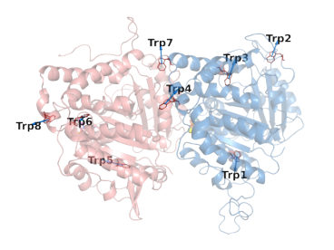
<figcaption class="paper-figure-caption"><b>Fig 1.</b> FIG. 1. Dipole geometry of the eight tryptophans (Trp1–Trp8) in the tubulin αβ-dimer, extracted from the MD frame at t = 50 ns. Each blue arrow starts at the centroid of an indole ring and points along µm (from the benzene ring toward the pyrrole ring, reflecting the direction of the S0 →1La difference dipole). The dipole mag- nitudes are assumed identical (µ = 5 D) for all Trp residues, but the directions nm(t) fluctuate with the trajectory. The Trp1–Trp8 labels follow Ref. [14]: Trp1–4 are αW21, αW346, αW388, αW407 on chain A, and Trp5–8 are βW21, βW101, βW344, βW397 on chain B.</figcaption>
</figure>
<figure class="paper-figure-card">
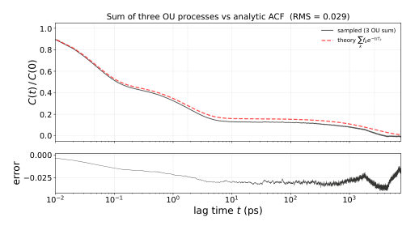
<figcaption class="paper-figure-caption"><b>Fig 2.</b> FIG. 2. ACF of the OU sum (a single 30 ns trajectory, five- realisation average; dots) versus the analytic target P k fke−t/Tk (solid). Lower panel: residual (sampled −theory). RMS residual = 0.028 over 10 fs–7.5 ns, confirming the sampler reproduces the fitted statistics.</figcaption>
</figure>
<figure class="paper-figure-card">
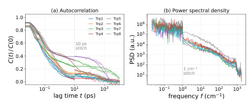
<figcaption class="paper-figure-caption"><b>Fig 3.</b> FIG. 3. Stitched autocorrelation and power spectrum of the site- energy fluctuations. (a) Self-normalised autocorrelations Cm(t) (dots) with tri-exponential fits (solid lines) for all eight Trps. (b) Stitched power spectral densities (arbitrary units). The stitch is set at f = 1 cm−1, below the long trajectory’s Nyquist frequency (1.67 cm−1, determined by its 10 ps sampling). The visible jump at the stitch is due to aliasing: power from frequencies above the Nyquist frequency folds back into the [0, 1.67] cm−1 band, artifi- cially inflating the long-trajectory PSD.</figcaption>
</figure>
<figure class="paper-figure-card">
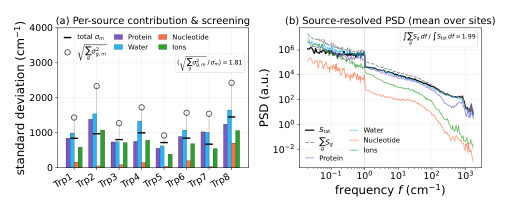
<figcaption class="paper-figure-caption"><b>Fig 4.</b> FIG. 4. Source decomposition and dielectric screening. (a) Per- source standard deviation σg,m (bars) with the measured total σm (black marker) and the uncorrelated expectation qP g σ2g,m (open</figcaption>
</figure>
<figure class="paper-figure-card">
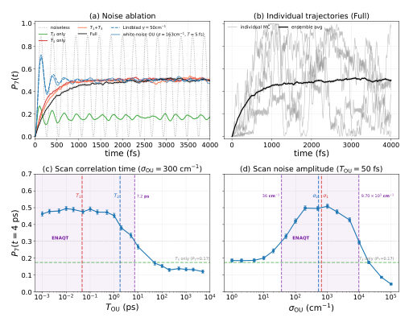
<figcaption class="paper-figure-caption"><b>Fig 5.</b> FIG. 5. Inhomogeneous dephasing and ENAQT on the Trp4–Trp7 two-site system (J = −59 cm−1). The excitation is initialised on Trp4 in all panels. Each site carries its own bath of three additive Ornstein–Uhlenbeck processes fitted to the per-site MD fluctuations (Table II). Dynamics are computed by MC sampling of the stochastic Schr¨odinger equation with NMC = 500 realisa- tions. (a) Noise ablation: population P7(t) on Trp7 under var- ious noise configurations. The noiseless case (grey dotted) gives coherent Rabi oscillations. The slowest mode T3 alone partially localises the excitation (P7(4 ps) = 0.17, green). Adding the fast mode T1 breaks the localisation and enables transport (T1 alone:...</figcaption>
</figure>
</div>

<p><strong>Summary.</strong> This work develops a detailed model for exciton transport in protein chromophores by deriving the environmental noise spectrum directly from all-atom MD simulations. The analysis reveals that the multi-timescale colored noise leads to Anderson localization, confining excitons to specific pairs rather than allowing uniform delocalization. This methodology is valuable for understanding quantum processes in complex biological environments.</p>
<p><strong>Why it may be interesting.</strong> It provides a rigorous framework for modeling open quantum systems where the bath correlation time is explicitly derived from molecular simulation, moving beyond simplified Markovian assumptions common in bio-physics.</p>
<details>
<summary>Detailed structure</summary>
<p><strong>Main problem.</strong> The study aims to characterize quantum exciton transport in a protein's tryptophan network under realistic, non-Markovian environmental noise conditions.</p>
<p><strong>Main result.</strong> The colored noise bath causes excitons to localize predominantly on strongly coupled proximal pairs via Anderson localization, contrasting with predictions from simple white-noise models.</p>
<p><strong>Method.</strong> All-atom Molecular Dynamics (MD) simulations are used to derive the time-dependent site-energy fluctuations ($\delta\epsilon_m(t)$), which are then incorporated into a stochastic Schrödinger equation solved using colored noise modeling.</p>
<p><strong>Model / system.</strong> The system is an eight-site network of tryptophan residues within tubulin $\alphaeta$-dimers. The exciton dynamics are governed by a Hamiltonian whose site energies fluctuate due to the protein/solvent environment, modeled as a superposition of three Ornstein–Uhlenbeck processes.</p>
<p><strong>Key observables.</strong> Site-energy autocorrelation function (tri-exponential), Participation Ratio ($PR$), and localization length.</p>
<p><strong>Important parameters / regimes.</strong> Three distinct noise timescales: sub-100-fs (water), picosecond (water), and nanosecond (protein conformational rearrangements).</p>
<p><strong>Assumptions / limitations.</strong> The bath dynamics are modeled as a superposition of three independent Ornstein–Uhlenbeck processes, assuming the system operates deep within the non-Markovian regime.</p>
<p><strong>Figures summary.</strong> Figures illustrate dipole geometries, site-energy fluctuation traces comparing short vs. long trajectories, and eigenstate localization plots showing confinement under disorder.</p>
<p><strong>Paper structure.</strong> The paper first characterizes the multi-timescale nature of environmental fluctuations using MD simulations, then models the exciton dynamics using a colored-noise Hamiltonian, and finally analyzes how this complex noise leads to specific localization patterns versus simple delocalization.</p>
</details>
<details>
<summary>Abstract</summary>
<p>The tryptophan residues in tubulin $αβ$-dimers form an ordered aromatic network that has been proposed to support quantum exciton transport even under physiological environmental noise. Existing studies of this system mostly assume white-noise dephasing, but the statistical properties of the protein-solvent bath coupled to tryptophan sites remain uncharacterised under physiological conditions. Here we characterise this fluctuation bath via all-atom molecular dynamics simulations of a solvated tubulin dimer at 310~K, combining high-frequency and long-time trajectories with 10~fs and 10~ps sampling intervals. The resulting autocorrelation of the site-energy fluctuations is tri-exponential, with three well-separated decay modes: sub-100-fs and picosecond fluctuations driven by water dynamics, and a nanosecond mode originating from protein conformational rearrangements. All three modes fall deep within the non-Markovian regime. We further demonstrate that the slow protein mode introduces strong quasi-static disorder, which results in Anderson localisation, while the two fast water modes frequently tune chromophore pairs through resonance, enabling environment-assisted quantum transport (ENAQT). On the full eight-site network, the coloured-noise bath confines excitons predominantly to strongly coupled proximal tryptophan pairs, in marked contrast to the more uniform delocalisation predicted by the standard white-noise Haken--Strobl model. Our workflow generalises to other pigment--protein systems with solvent-exposed chromophores.</p>
</details>
<p><sub><a href="#top">↑ back to top</a></sub></p>

<p><a id="paper-2607.10281"></a></p>
<h3 id="nonlocal-manipulation-of-backflow-with-quantum-correlations"><a href="http://arxiv.org/abs/2607.10281v1">Nonlocal Manipulation of Backflow with Quantum Correlations</a></h3>
<p><strong>Authors:</strong> Ya Xiao, Zhen-Fei Zhang, Yan-Xin Rong, Kai Sun, Jin-Shi Xu, Yong-Jian Gu<br>
<strong>Type:</strong> both · <strong>Category:</strong> other · <strong>PDF:</strong> <a href="https://arxiv.org/pdf/2607.10281v1">https://arxiv.org/pdf/2607.10281v1</a><br>
<strong>Analysis basis:</strong> full PDF text, analyzed in chunks
<strong>Topic relevance:</strong> 🔥 <code>quantum measurements</code> <strong>4/5</strong> · <code>entanglement &amp; information structure</code> <strong>3/5</strong> · <code>interference shaping light</code> <strong>3/5</strong> · <code>measurement-induced transitions</code> <strong>2/5</strong> · <code>quantum optics experiment</code> <strong>2/5</strong> · <code>correlated / nonlocal dissipation</code> <strong>1/5</strong> · <code>driven-dissipative phase transition</code> <strong>1/5</strong> · <code>methods for driven-dissipative</code> <strong>1/5</strong> · <code>non-equilibrium dynamics</code> <strong>1/5</strong></p>
<div class="figure-strip-hint">↔ Scroll figures horizontally</div>
<div class="paper-figures-scroll">
<figure class="paper-figure-card">
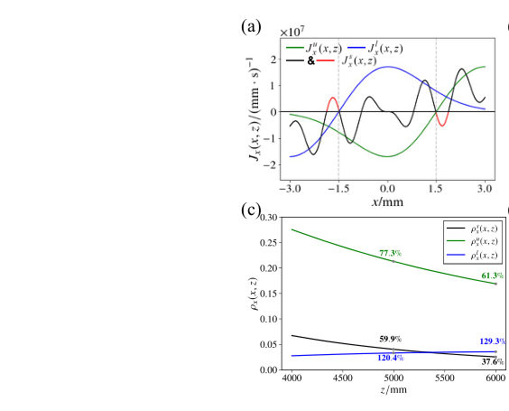
<figcaption class="paper-figure-caption"><b>Fig 1.</b> Fig. 1. Manipulate backflow in double-slit interference. (a) Probability currents 𝐽𝑠 𝑥(𝑥, 𝑧), 𝐽𝑢 𝑥(𝑥, 𝑧), and 𝐽𝑙 𝑥(𝑥, 𝑧) at 𝑧= 4200 mm for the maximally entangled state |𝜓𝑠⟩ with photon A projected onto (|𝐻⟩𝐴−|𝑉⟩𝐴)/ √</figcaption>
</figure>
<figure class="paper-figure-card">
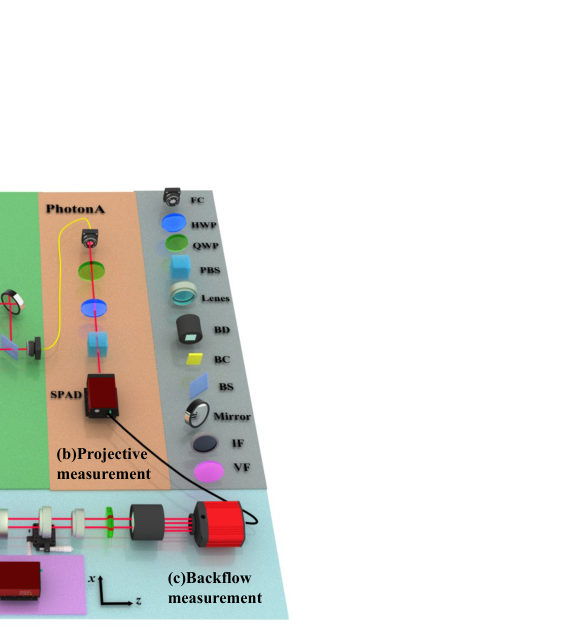
<figcaption class="paper-figure-caption"><b>Fig 2.</b> Fig. 2. Experimental setup. (a) Source of Werner-state entangled photon pair A and B. (b) Projective measurement system for photon A. (c) Backflow detection system for photon B. (d) Correlation-strength analysis of the prepared state. HWP:Half-wave plates; QWP: Quarter-wave plates; DM: Dichroic mirror; PBS: Polarizing beam splitters; VOA: Variable Optical Attenulator; BD: Beam displacers; L1-L3: Lens; BC: Birefringent crystal; PPKTP: periodically poled KTiOPO4 crystal; SPAD: Single photon avalanche diode; ICCD: Intensified CCD.</figcaption>
</figure>
<figure class="paper-figure-card">
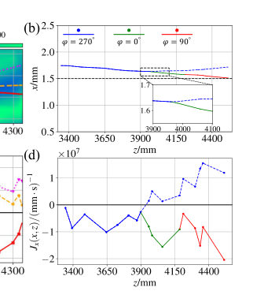
<figcaption class="paper-figure-caption"><b>Fig 3.</b> Fig. 3. Dynamic manipulation of backflow in double-slit interference. (a) Bohmian trajectories guided respectively by: the upper-slit wavefunction 𝜓𝑢(𝑥, 𝑧), beginning at 𝑥= 1.625 mm; the lower-slit wavefunction 𝜓𝑙(𝑥, 𝑧), beginning at 𝑥= 1.244 mm; and the double-slit superposition wavefunction 𝜓𝑠(𝑥, 𝑧) = (𝜓𝑢(𝑥, 𝑧) + 𝜓𝑙(𝑥, 𝑧))/ √</figcaption>
</figure>
<figure class="paper-figure-card">
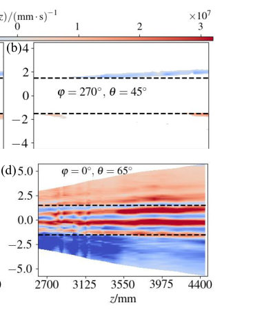
<figcaption class="paper-figure-caption"><b>Fig 4.</b> Fig. 4. Manipulation of backflow via static phase and amplitude modulation. (a, b) Backflow regions for photon B when photon A is projected onto the state |𝑚⟩𝐴= (|𝐻⟩−𝑒−𝑖𝜑|𝑉⟩)/ √</figcaption>
</figure>
<figure class="paper-figure-card">
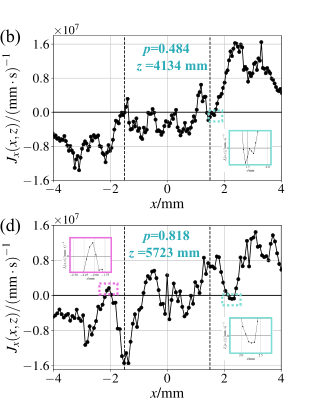
<figcaption class="paper-figure-caption"><b>Fig 5.</b> Fig. 5. Distance-dependent quantum resource requirement for nonlocally manipulating the emergence of backflow. (a) Distribution of experimental states. The red- and blue-marked states indicate the emergence and absence, respectively, of backflow at photon 𝐵following an optimal amplitude projective measurement on photon 𝐴. (b–d) Transverse probability current 𝐽𝑥(𝑥, 𝑧) of photon B for the three red-marked states in (a). Backflow is characterized by positive probability current for 𝑥&lt; −𝑑/2 and negative probability current for 𝑥&gt; 𝑑/2. The insets are magnified views of the corresponding regions exhibiting backflow.</figcaption>
</figure>
</div>

<p><strong>Summary.</strong> The paper demonstrates that quantum correlations are operational resources capable of controlling the counter-intuitive phenomenon of 'backflow' in double-slit interference using entangled photons. By varying the propagation distance, the minimum required correlation strength increases systematically, proving a quantitative link between spatial scale and the necessary nonlocality (from entanglement to Bell states). This opens avenues for non-contact manipulation of quantum systems.</p>
<p><strong>Why it may be interesting.</strong> This work bridges fundamental concepts from quantum information theory (resource quantification) with wave mechanics/quantum optics (interference phenomena), providing concrete evidence for how non-local quantum correlations can actively steer physical dynamics in open systems.</p>
<details>
<summary>Detailed structure</summary>
<p><strong>Main problem.</strong> The study investigates whether quantum correlations can serve as an operational resource for nonlocally manipulating dynamical transmission processes, specifically focusing on the phenomenon known as 'backflow' in double-slit interference.</p>
<p><strong>Main result.</strong> Nonlocal manipulation of backflow is achieved by performing local measurements on one entangled photon to remotely engineer the relative amplitude and phase of its partner. Crucially, the minimum required quantum correlation strength increases monotonically with propagation distance, sequentially demanding entanglement, then EPR-steering, and finally Bell nonlocality.</p>
<p><strong>Method.</strong> The authors use a theoretical framework combining weak measurement techniques with an experimental setup involving polarization-path-entangled photons to calculate probability currents and reconstruct Bohmian trajectories. Resource requirements are quantified by analyzing the state purity of Werner states.</p>
<p><strong>Model / system.</strong> The system is based on double-slit interference using polarization-path-entangled photon pairs (A and B). The analysis models the quantum correlations using Werner states ($
ho_W$) to probe different levels of nonlocality, while the physical process involves calculating the probability current $J_x$ for the path degree of freedom.</p>
<p><strong>Key observables.</strong> Backflow (negative probability current opposite to momentum), total backflow length ($f_{	ext{length}}$), and the minimum required quantum correlation strength ($p_{\min}^{th}(z)$).</p>
<p><strong>Important parameters / regimes.</strong> Propagation distance ($z$), state purity parameter ($p$), relative amplitude, and phase modulation ($\varphi$). The critical thresholds observed are entanglement, EPR-steering, and Bell nonlocality.</p>
<p><strong>Assumptions / limitations.</strong> The analysis relies on the use of Werner states to quantify resource requirements and utilizes weak measurement techniques for direct visualization of the manipulation process.</p>
<p><strong>Figures summary.</strong> Figures illustrate probability currents showing backflow control via amplitude/phase modulation; one figure plots the increasing minimum correlation strength required versus distance, mapping out the transition from entanglement to Bell nonlocality.</p>
<p><strong>Paper structure.</strong> The paper establishes the problem by linking quantum correlations to dynamical manipulation. It details the theoretical framework using entangled photons and Werner states to calculate backflow metrics. The core argument is built around demonstrating that increasing propagation distance necessitates stronger quantum resources, culminating in a quantitative mapping of correlation types required for control.</p>
</details>
<details>
<summary>Abstract</summary>
<p>Quantum correlations are central resources for quantum information processing, yet their ability to manipulate dynamical transmission processes remains largely unexplored. Here, we investigate this ability through backflow, a uniquely interference phenomenon in which local probability flow propagates opposite to the momentum direction. We report the first nonlocal manipulation of backflow in double-slit interference using polarization-path-entangled photons. By performing local measurements on one photon, we remotely engineer the relative amplitude and phase of the two paths associated with its partner, manipulating the emergence, spatial distribution, and propagation dynamics of backflow without directly accessing the interfering system. Combining weak measurements to extract the transverse momentum and reconstruct Bohmian trajectories, we provide a direct visualization of the manipulation process with single-pixel spatial resolution. Furthermore, using Werner states with tunable correlation strengths, we reveal a distance-dependent resource requirement for nonlocal backflow manipulation: the minimum correlation strength required to induce backflow increases with propagation distance, progressing from entanglement to EPR-steering and ultimately Bell nonlocality. Our results show quantum correlations as operational resources for manipulating transmission dynamics and open new avenues for non-contact manipulation of fragile or inaccessible systems.</p>
</details>
<p><sub><a href="#top">↑ back to top</a></sub></p>

<p><a id="paper-2607.11524"></a></p>
<h3 id="harnessing-finite-size-effects-to-gauge-aging-in-the-math249math-ising-model"><a href="http://arxiv.org/abs/2607.11524v1">Harnessing finite-size effects to gauge aging in the $2D$ Ising model</a></h3>
<p><strong>Authors:</strong> Dustin Warkotsch, Malte Henkel, Wolfhard Janke<br>
<strong>Type:</strong> theory · <strong>Category:</strong> statistical mechanics · <strong>PDF:</strong> <a href="https://arxiv.org/pdf/2607.11524v1">https://arxiv.org/pdf/2607.11524v1</a><br>
<strong>Analysis basis:</strong> full PDF text, analyzed in chunks
<strong>Topic relevance:</strong> 🔥 <code>non-equilibrium dynamics</code> <strong>4/5</strong> · <code>methods for driven-dissipative</code> <strong>3/5</strong> · <code>non-equilibrium universality</code> <strong>3/5</strong> · <code>scars &amp; prethermalization</code> <strong>2/5</strong> · <code>Keldysh / 2PI / non-Gaussian methods</code> <strong>1/5</strong> · <code>analog quantum simulation</code> <strong>1/5</strong> · <code>correlated / nonlocal dissipation</code> <strong>1/5</strong> · <code>driven-dissipative phase transition</code> <strong>1/5</strong> · <code>entanglement &amp; information structure</code> <strong>1/5</strong></p>
<div class="figure-strip-hint">↔ Scroll figures horizontally</div>
<div class="paper-figures-scroll">
<figure class="paper-figure-card">
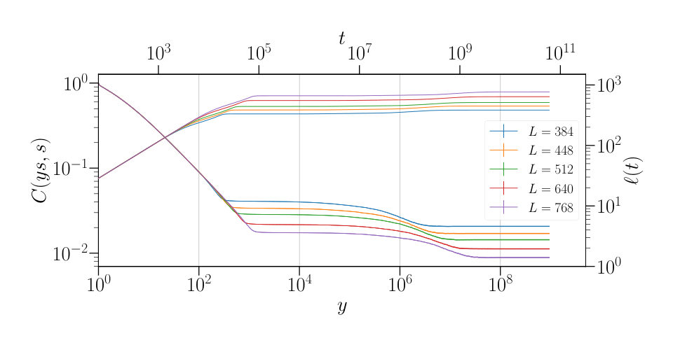
<figcaption class="paper-figure-caption"><b>Fig 1.</b> Figure 1. Exemplary behavior of the characteristic length scale ℓ(t) vs time t (upper curves, right and upper axes) and the two-time autocorrelator C(ys, s) vs y (lower curves, left and lower axes) for a nearest-neighbor 2D Ising model after a quench to 0.2Tc for system sizes L = {384, 448, 512, 640, 768} and waiting time s = 64. Note that saturation of both exhibits a step-wise behavior featuring the formation of an initial pseudo-plateau before settling at the equilibrium value beginning around t ≈1010 and y ≈108, respectively.</figcaption>
</figure>
<figure class="paper-figure-card">
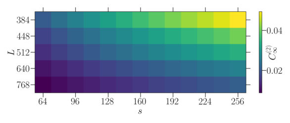
<figcaption class="paper-figure-caption"><b>Fig 2.</b> Figure 2. Heatmap of plateau heights C(2) ∞of the two-time autocorrelator at T = 0.2TC depending on linear lattice size L and waiting time s. As the plateau height grows from the lower left to the upper right side, equations (6) and (7) describe the relation between individual values of C(2) ∞for their respective orthogonal axis.</figcaption>
</figure>
<figure class="paper-figure-card">
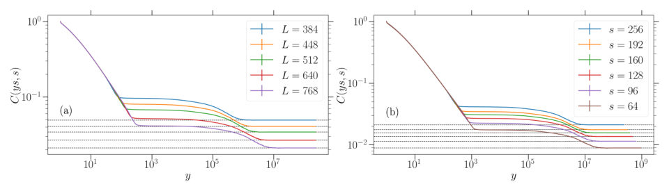
<figcaption class="paper-figure-caption"><b>Fig 3.</b> Figure 3. Two-time autocorrelator C(ys, s) for the 2D Ising model quenched to T = 0.2Tc for various fixed (a) lattice sizes L at s = 256, or (b) waiting times s at L = 768. The steps in the plateaus result from gradual evaporation of metastable, i.e., striped states of all kinds (viz. figure 4). The dashed black lines indicate the height C(2) ∞for the respective L or s.</figcaption>
</figure>
<figure class="paper-figure-card">
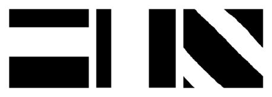
<figcaption class="paper-figure-caption"><b>Fig 4.</b> Figure 4. Metastable states of the 2D Ising model with periodic boundary conditions: horizontal stripe, vertical stripe and diagonal stripe. The former two are infinitely long-lived at T = 0 whereas the lifetime of the last one depends on lattice size L. Above T = 0, all stripes evaporate eventually, at sufficiently large times.</figcaption>
</figure>
<figure class="paper-figure-card">
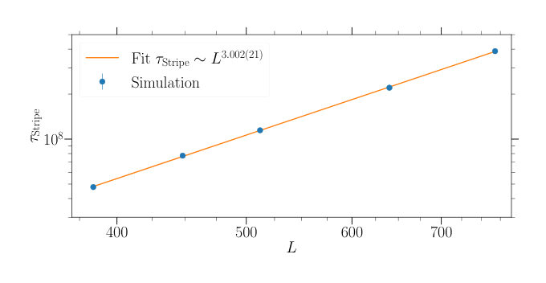
<figcaption class="paper-figure-caption"><b>Fig 5.</b> Figure 5. Average lifetime (measured in MC sweeps) of all striped configurations vs lattice size L at T = 0.2Tc in 2D.</figcaption>
</figure>
</div>

<p><strong>Summary.</strong> This paper develops a novel computational method to determine critical exponents ($\lambda$ and $z$) in the aging dynamics of the 2D Ising model. It achieves this by deliberately exploiting finite-size effects observed in the two-time autocorrelator plateau height, providing robust estimates even when direct asymptotic analysis is difficult.</p>
<p><strong>Why it may be interesting.</strong> While focused on classical statistical mechanics, the techniques for characterizing slow relaxation dynamics (aging) using finite-size effects are highly relevant to open quantum systems where thermalization or quasi-equilibrium states are approached slowly.</p>
<details>
<summary>Detailed structure</summary>
<p><strong>Main problem.</strong> The study aims to precisely gauge aging phenomena in systems far from equilibrium by analyzing the relaxation behavior of the 2D Ising model.</p>
<p><strong>Main result.</strong> Finite-size scaling relations derived from the plateau height of the two-time autocorrelator allow for independent estimation of the autocorrelation exponent ($\lambda$) and dynamical exponent ($z$).</p>
<p><strong>Method.</strong> Classical Monte Carlo simulations are employed, utilizing finite-size scaling techniques to analyze how system size ($L$) affects the decay of the two-time autocorrelator $C(t,s)$.</p>
<p><strong>Model / system.</strong> The physical model is the 2D Ising model with nearest-neighbor interactions. The analysis focuses on its non-equilibrium dynamics following a quench below the critical temperature.</p>
<p><strong>Key observables.</strong> Two-time autocorrelator $C(t, s)$, characteristic length scale $\ell(t)$, and the plateau height $C_{\infty}^{(2)}(s,L)$.</p>
<p><strong>Important parameters / regimes.</strong> Temperature regime ($0 < T < T_c$), lattice size ($L$), waiting time ($s$), and the exponents $\lambda$ and $z$.</p>
<p><strong>Assumptions / limitations.</strong> The analysis treats domain wall effects as a 'premature finite-size phenomenon' and relies on specific scaling laws derived from the autocorrelator plateau.</p>
<p><strong>Figures summary.</strong> Figures illustrate the crossover of both the length scale $\ell(t)$ and the autocorrelation $C(y, s)$ towards saturation plateaus when varying lattice sizes ($L$).</p>
<p><strong>Paper structure.</strong> The paper establishes the theoretical framework using the two-time autocorrelator in finite systems. It then details the application of novel scaling relations to extract exponents ($\lambda$ and $\lambda/z$) by analyzing how these observables depend on $L$ and $s$.</p>
</details>
<details>
<summary>Abstract</summary>
<p>The relaxation behavior towards equilibrium of the $2D$ Ising model with nearest-neighbor interactions has been studied with focus on the two-time autocorrelator $C(t,s)$. Finite-size effects affecting the growing magnetic domains lead to the saturation of $C(t,s)$ with a distinct plateau of height $C_{\infty}^{(2)}(s,L)$ scaling algebraically with waiting time $s$ and lattice size $L$. These scaling relations are used to produce precise estimates for the autocorrelation exponent $λ$ and dynamical exponent $z$ with deliberately small lattices. Treating smooth domain walls in a similar manner to the lattice boundaries, their effect on $C(t,s)$ can be understood as premature finite-size phenomenon, extending our ansatz to systems not yet in equilibrium.</p>
</details>
<p><sub><a href="#top">↑ back to top</a></sub></p>

<p><a id="paper-2607.10192"></a></p>
<h3 id="arrhenius-type-description-and-noise-composition-dependence-of-single-vacancy-hopping-in-active-brownian-crystals"><a href="http://arxiv.org/abs/2607.10192v1">Arrhenius-Type Description and Noise-Composition Dependence of Single-Vacancy Hopping in Active Brownian Crystals</a></h3>
<p><strong>Authors:</strong> Hiroto Tomida, Yoshihiro Yamazaki<br>
<strong>Type:</strong> theory · <strong>Category:</strong> statistical mechanics · <strong>PDF:</strong> <a href="https://arxiv.org/pdf/2607.10192v1">https://arxiv.org/pdf/2607.10192v1</a><br>
<strong>Analysis basis:</strong> full PDF text, analyzed in chunks
<strong>Topic relevance:</strong> 🔥 <code>non-equilibrium dynamics</code> <strong>4/5</strong> · <code>driven-dissipative phase transition</code> <strong>3/5</strong> · <code>methods for driven-dissipative</code> <strong>3/5</strong> · <code>non-equilibrium universality</code> <strong>2/5</strong> · <code>Frenkel-Kontorova</code> <strong>1/5</strong> · <code>Keldysh / 2PI / non-Gaussian methods</code> <strong>1/5</strong> · <code>analog quantum simulation</code> <strong>1/5</strong> · <code>correlated / nonlocal dissipation</code> <strong>1/5</strong></p>
<div class="figure-strip-hint">↔ Scroll figures horizontally</div>
<div class="paper-figures-scroll">
<figure class="paper-figure-card">
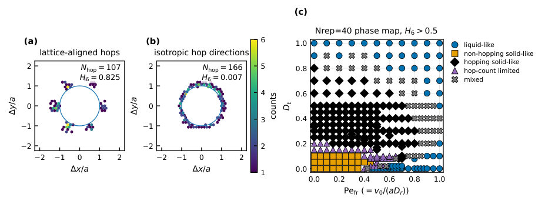
<figcaption class="paper-figure-caption"><b>Fig 1.</b> Figure 1: (Color online) Operational classification of the defect-hopping solid-like regime. (a,b) Representative hop-vector distributions for lattice-compatible hopping and disordered regimes. (c) State points are classified using the structural criterion ψ6 ≥0.80 and the hopping criteria H6 ≥0.50 and at least 20 hops are detected. The hop-count cutoff is imposed to ensure stable directional statistics. Hop-count-limited points have too few detected hops to satisfy this cutoff and are therefore not used as hopping-solid-like data in the rate analysis. Mixed points indicate parameter sets for which independent runs give both solid-like and liquid-like/disordered classifications; these...</figcaption>
</figure>
<figure class="paper-figure-card">
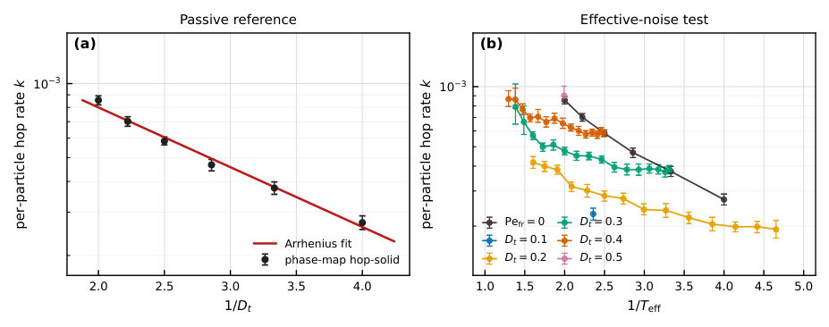
<figcaption class="paper-figure-caption"><b>Fig 2.</b> Figure 2: (Color online) Hop-rate tests within the retained hopping-solid-like regime. (a) Passive rates follow an Arrhenius-like reference k = A exp(−∆E/Dt), with ∆E = 0.521 and A = 0.0288. (b) Effective-noise test: even using Teff = Dt + a2Pe2 r/2, active and passive data do not fall on a single curve versus 1/Teff. Error bars denote two-sided 95% percentile bootstrap confidence intervals over independent runs.</figcaption>
</figure>
<figure class="paper-figure-card">
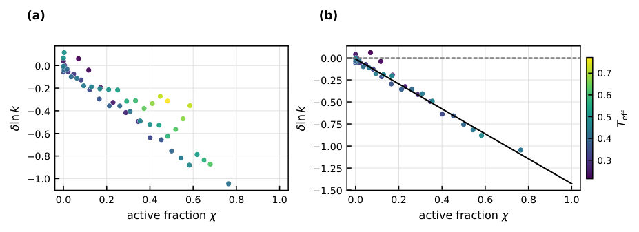
<figcaption class="paper-figure-caption"><b>Fig 3.</b> Figure 3: (Color online) Noise-composition dependence beyond a scalar effective-noise de- scription. The passive-normalized residual δ ln k is plotted against the active fraction χ = (a2Pe2 r/2)/Teff. Color indicates Teff. Panel (a) shows all retained hopping-solid-like state points, whereas panel (b) focuses on the low-effective-noise subset Teff &lt; 0.5. The solid line in panel (b) is a weighted linear fit to this subset, and the dashed line denotes zero residual.</figcaption>
</figure>
</div>

<p><strong>Summary.</strong> This work investigates how vacancies hop through an active crystal, challenging the assumption that transport rates depend only on a total effective noise temperature. By analyzing deviations from simple models, the authors show that the specific composition of thermal versus active fluctuations dictates the hopping kinetics. This demonstrates a breakdown of the standard effective-temperature description for defect-mediated transport in driven matter.</p>
<p><strong>Why it may be interesting.</strong> The breakdown of simple effective-temperature descriptions in driven systems is highly relevant for understanding non-equilibrium dynamics in complex quantum or classical many-body systems where noise sources are heterogeneous.</p>
<details>
<summary>Detailed structure</summary>
<p><strong>Main problem.</strong> To determine if vacancy-mediated hopping in an active crystal is governed solely by a single effective noise amplitude or if the composition of thermal versus persistent active fluctuations matters.</p>
<p><strong>Main result.</strong> The hopping kinetics cannot be described by a simple effective temperature; the rate depends systematically on the 'active fraction' ($\chi$), indicating that fluctuation composition is crucial.</p>
<p><strong>Method.</strong> Numerical simulation using overdamped Langevin equations to calculate long-time average hop rates, followed by fitting these rates against theoretical models based on effective noise parameters.</p>
<p><strong>Model / system.</strong> A two-dimensional active Brownian-particle (ABP) crystal containing a single vacancy. Dynamics are modeled with repulsive interactions and include both thermal diffusion ($D_t$) and persistent active driving forces.</p>
<p><strong>Key observables.</strong> Hopping rate ($k$), Effective Temperature ($T_{	ext{eff}}$), Active Fraction ($\chi$), and the deviation residual ($\delta \ln k$).</p>
<p><strong>Important parameters / regimes.</strong> Active fraction ($\chi$), translational diffusion coefficient ($D_t$), and the comparison to the passive limit.</p>
<p><strong>Assumptions / limitations.</strong> The analysis is restricted to the hopping-solid-like state, and the derived equations are effective descriptions over specific parameter regimes.</p>
<p><strong>Figures summary.</strong> Figure 2(a) shows passive rates following an Arrhenius law. Figure 2(b) demonstrates that active rates do not collapse onto a single curve when plotted against $1/T_{	ext{eff}}$, showing systematic deviations organized by $\chi$.</p>
<p><strong>Paper structure.</strong> The paper first establishes the baseline using the passive limit (Arrhenius behavior). It then compares active hopping rates to predictions based only on $T_{	ext{eff}}$, revealing discrepancies. Finally, it develops a phenomenological model incorporating the active fraction ($\chi$) to explain these systematic deviations.</p>
</details>
<details>
<summary>Abstract</summary>
<p>We study vacancy-mediated hopping in a two-dimensional active Brownian-particle crystal with a single vacancy. Under active driving, the hopping rates are not organized by the free-particle effective noise amplitude alone. In contrast, in the passive limit, the hopping rate follows an Arrhenius-like activated trend with respect to the translational diffusion coefficient. Effective-noise comparisons show systematic dependence on the active fraction, indicating that the composition of thermal and persistent active fluctuations affects the hopping kinetics. These results demonstrate a breakdown of an effective-temperature description for microscopic defect-mediated transport in an active crystal.</p>
</details>
<p><sub><a href="#top">↑ back to top</a></sub></p>

<p><a id="paper-2607.11396"></a></p>
<h3 id="sonic-black-holes-with-thick-horizons-in-becs"><a href="http://arxiv.org/abs/2607.11396v1">Sonic black holes with thick horizons in BECs</a></h3>
<p><strong>Authors:</strong> Daniel Peñalver, Marco De Vito, Roberto Balbinot, Alessandro Fabbri<br>
<strong>Type:</strong> theory · <strong>Category:</strong> quantum gases · <strong>PDF:</strong> <a href="https://arxiv.org/pdf/2607.11396v1">https://arxiv.org/pdf/2607.11396v1</a><br>
<strong>Analysis basis:</strong> full PDF text, analyzed in chunks
<strong>Topic relevance:</strong> 🔥 <code>analog quantum simulation</code> <strong>4/5</strong> · <code>Keldysh / 2PI / non-Gaussian methods</code> <strong>3/5</strong> · <code>non-equilibrium dynamics</code> <strong>3/5</strong> · <code>non-equilibrium universality</code> <strong>2/5</strong> · <code>correlated / nonlocal dissipation</code> <strong>1/5</strong> · <code>driven-dissipative phase transition</code> <strong>1/5</strong> · <code>entanglement &amp; information structure</code> <strong>1/5</strong> · <code>methods for driven-dissipative</code> <strong>1/5</strong></p>
<div class="figure-strip-hint">↔ Scroll figures horizontally</div>
<div class="paper-figures-scroll">
<figure class="paper-figure-card">
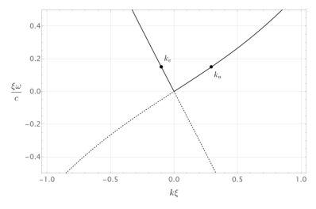
<figcaption class="paper-figure-caption"><b>Fig 1.</b> FIG. 1: Dispersion relation (2.9) for a subsonic region. Solid and dashed lines represent the positive and the negative norm branch in (2.12) respectively. For a particular (real) frequency, two solutions are real and the other two are complex conjugates. Parameters: |v</figcaption>
</figure>
<figure class="paper-figure-card">
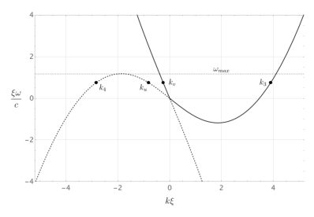
<figcaption class="paper-figure-caption"><b>Fig 2.</b> FIG. 2: Dispersion relation (2.9) for a supersonic region. Solid and dashed lines represent the positive and the negative branch of the square root in (2.12). For frequencies ω &lt; ωmax, all four roots are real and two of them belong to the negative norm branch. For frequencies ω &gt; ωmax, only two of them are real as in the subsonic case. Parameters: |v</figcaption>
</figure>
<figure class="paper-figure-card">
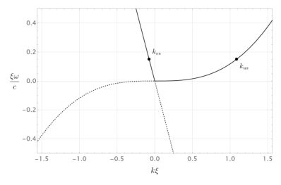
<figcaption class="paper-figure-caption"><b>Fig 3.</b> FIG. 3: Dispersion relation (2.9) for a sonic region. Solid and dashed lines represent the positive and negative branch of the square root in (2.12). Parameters: |v</figcaption>
</figure>
<figure class="paper-figure-card">
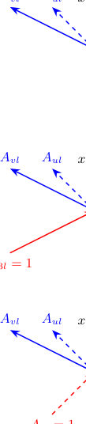
<figcaption class="paper-figure-caption"><b>Fig 4.</b> FIG. 4: ‘in’ modes for the subsonic-supersonic model.</figcaption>
</figure>
<figure class="paper-figure-card">
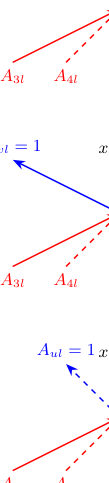
<figcaption class="paper-figure-caption"><b>Fig 5.</b> FIG. 5: ‘out’ modes for the subsonic-supersonic model.</figcaption>
</figure>
</div>

<p><strong>Summary.</strong> This paper theoretically models acoustic black holes using Bose-Einstein condensates exhibiting thick sonic horizons. By analyzing wave propagation across flow discontinuities, the authors calculate particle creation rates and correlation functions analogous to Hawking radiation. The results confirm Planckian statistics and provide a detailed theoretical framework for detecting these quantum effects in BEC experiments.</p>
<p><strong>Why it may be interesting.</strong> This work directly applies advanced quantum field theory techniques (Bogoliubov transformations, scattering matrices) to ultracold atomic systems, providing concrete theoretical predictions for observable signatures like Hawking radiation analogues.</p>
<details>
<summary>Detailed structure</summary>
<p><strong>Main problem.</strong> The study investigates acoustic black holes formed within Bose-Einstein condensates (BECs) that possess thick sonic horizons.</p>
<p><strong>Main result.</strong> Particle creation rates exhibit good agreement with Planckian distributions for low frequencies, and correlation functions show distinct peaks corresponding to different pairs of created particles.</p>
<p><strong>Method.</strong> The analysis uses Bogoliubov theory applied to the Gross-Pitaevskii equation, solving matching conditions across discontinuities separating subsonic/supersonic regions.</p>
<p><strong>Model / system.</strong> The system is a one-dimensional BEC modeled by the GP equation, analyzed in regimes transitioning from subsonic ($|v|<c$) to supersonic ($|v|>c$) flow, featuring a thick sonic horizon where flow velocity equals the speed of sound.</p>
<p><strong>Key observables.</strong> Number of created particles and density-density correlation functions (used as experimental diagnostics for Hawking-like radiation).</p>
<p><strong>Important parameters / regimes.</strong> Flow velocity ($v$), speed of sound ($c$), external potential ($V_{	ext{ext}}$), coupling constant ($g$), and the width/location of discontinuities.</p>
<p><strong>Assumptions / limitations.</strong> The analysis relies on idealized models, such as assuming constant density and flow velocity across regions, and uses approximations like leading order in frequency ($\omega$).</p>
<p><strong>Figures summary.</strong> Figures compare calculated particle numbers against Planckian distributions for Hawking, Partner, and Spectator modes; other figures illustrate 'in' and 'out' mode solutions.</p>
<p><strong>Paper structure.</strong> The paper progresses from analyzing the dispersion relation across different flow regimes (subsonic, supersonic, sonic) to applying matching conditions at step-like discontinuities in a multi-region model, culminating in calculations of particle creation rates and correlation functions.</p>
</details>
<details>
<summary>Abstract</summary>
<p>We consider simple one dimensional models of acoustic black holes formed by Bose-Einstein condensates where the flow is stepwise homogeneous. We shall concentrate on the case in which an extended sonic region is present, i.e. a region where the flow velocity equals exactly the speed of sound. These models can be thought of as acoustic black holes with a thick horizon. Particular attention will be devoted to the number of created particles and to the density-density correlation functions, these latter being at present time the experimental tool to identify Hawking like radiation in acoustic black holes.</p>
</details>
<p><sub><a href="#top">↑ back to top</a></sub></p>

<p><a id="paper-2607.10737"></a></p>
<h3 id="accessing-100-ghz-mechanical-modes-in-bulk-crystals-at-cryogenic-temperatures"><a href="http://arxiv.org/abs/2607.10737v1">Accessing 100 GHz Mechanical Modes in Bulk Crystals at Cryogenic Temperatures</a></h3>
<p><strong>Authors:</strong> Boxuan Tian, Jiacheng Xie, Hong X. Tang<br>
<strong>Type:</strong> experiment · <strong>Category:</strong> other · <strong>PDF:</strong> <a href="https://arxiv.org/pdf/2607.10737v1">https://arxiv.org/pdf/2607.10737v1</a><br>
<strong>Analysis basis:</strong> full PDF text, analyzed in chunks
<strong>Topic relevance:</strong> 🔥 <code>quantum optics experiment</code> <strong>4/5</strong> · <code>analog quantum simulation</code> <strong>3/5</strong> · <code>correlated cavity matter</code> <strong>3/5</strong> · <code>Tavis-Cummings &amp; cavity-many-emitter</code> <strong>2/5</strong> · <code>QC/QI experiment</code> <strong>1/5</strong> · <code>driven-dissipative phase transition</code> <strong>1/5</strong> · <code>methods for driven-dissipative</code> <strong>1/5</strong></p>
<div class="figure-strip-hint">↔ Scroll figures horizontally</div>
<div class="paper-figures-scroll">
<figure class="paper-figure-card">
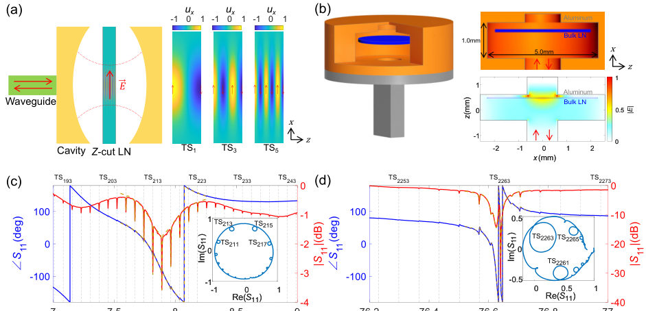
<figcaption class="paper-figure-caption"><b>Fig 1.</b> FIG. 1. Bulk crystal cavity piezo–electromechanical coupling. (a) Schematic diagram of the one-</figcaption>
</figure>
<figure class="paper-figure-card">

<figcaption class="paper-figure-caption"><b>Fig 2.</b> FIG. 2. Mechanical modes with niobium cavity at cryogenic temperatures (4.2 K). Measured S11</figcaption>
</figure>
<figure class="paper-figure-card">

<figcaption class="paper-figure-caption"><b>Fig 3.</b> FIG. 3. Strong coupling between a tunable superconducting cavity and multiple mechanical modes.</figcaption>
</figure>
<figure class="paper-figure-card">

<figcaption class="paper-figure-caption"><b>Fig 4.</b> FIG. 4. Polarization splitting of mechanical modes. (a,b) S11 spectra of the same aluminum cavity-</figcaption>
</figure>
<figure class="paper-figure-card">

<figcaption class="paper-figure-caption"><b>Fig 5.</b> FIG. 5. Mechanical quality factors Q measured in this work (red triangles), spanning 33–110 GHz.</figcaption>
</figure>
</div>

<p><strong>Summary.</strong> The authors developed a novel method to study mechanical quantum motion in bulk crystals by coupling them non-contactly into superconducting microwave cavities. They achieved high quality factors for vibrational modes near 100 GHz at cryogenic temperatures. This platform enables the observation of strong, coherent energy exchange between microwave photons and mechanical phonons, advancing macroscopic quantum physics experiments.</p>
<p><strong>Why it may be interesting.</strong> This work provides an experimental realization of a high-frequency quantum transducer platform, directly testing cavity QED concepts (photon-phonon coupling) using macroscopic mechanical oscillators, which is highly relevant to open quantum systems and quantum transducers.</p>
<details>
<summary>Detailed structure</summary>
<p><strong>Main problem.</strong> The research aims to access and study mechanical quantum motion at high frequencies (near 100 GHz) using bulk crystals while maintaining low dissipation.</p>
<p><strong>Main result.</strong> They successfully demonstrated strong coupling between microwave cavity photons and multiple mechanical phonon modes in a bulk lithium niobate platform, achieving high quality factors up to 30,000.</p>
<p><strong>Method.</strong> The study uses superconducting niobium cavities coupled non-contactly to bulk crystals (LiNbO3) and characterizes the system using microwave spectroscopy (S11 measurements) at cryogenic temperatures.</p>
<p><strong>Model / system.</strong> The platform is a piezoelectric cavity–phonon system utilizing bulk lithium niobate. The interaction is modeled by an effective Hamiltonian describing coupling between cavity photons ($\hat{a}$) and mechanical phonons ($\hat{b}$), leading to the observation of avoided crossings in the spectrum.</p>
<p><strong>Key observables.</strong> Mechanical quality factors ($Q_b$) up to 30,000; Cooperativity ($C$) up to 16.6; Measured spectral shifts and linewidths via S11 fitting.</p>
<p><strong>Important parameters / regimes.</strong> Operating frequencies near 100 GHz; Cryogenic temperatures (4 K); Effective vibrational masses in the milligram range.</p>
<p><strong>Assumptions / limitations.</strong> The use of non-contact coupling minimizes surface losses, and analysis relies on fitting complex S11 spectra to cavity-phonon models.</p>
<p><strong>Figures summary.</strong> Figures illustrate the experimental setup, measured S11 spectra at room and cryogenic temperatures showing mechanical resonances, and avoided crossings confirming strong coupling between microwave photons and phonons.</p>
<p><strong>Paper structure.</strong> The paper progresses from establishing the feasibility of non-contact coupling in bulk LN to characterizing high-$Q$ mechanical modes across a wide frequency band, culminating in demonstrations of coherent energy exchange (strong coupling) at cryogenic temperatures.</p>
</details>
<details>
<summary>Abstract</summary>
<p>Sub-terahertz electromechanics offers a promising route to probe mechanical quantum motion at experimentally friendly Kelvin temperatures. Traditionally, high-frequency mechanical resonators rely on advanced microfabrication to shape complex microstructures, while bulk crystals have been largely overlooked due to their large inertia and challenging transduction at such frequencies. Here we show that bulk lithium niobate can host mechanically accessible modes near 100 GHz when coupled via plug-and-play three-dimensional microwave cavities. This approach enables efficient, non-contact excitation of centimeter-scale, milligram-mass vibrational modes across 7.0--110 GHz, with mechanical quality factors up to 30,000 at W band. Furthermore, using a frequency-tunable superconducting niobium cavity at 4 K, we demonstrate strong coupling between a microwave cavity mode and multiple mechanical modes, enabling coherent energy exchange between microwave photons and mechanical phonons with cooperativity up to 16.6 at 110 GHz. These results establish a versatile platform for accessing massive high-frequency mechanical modes and for precision tests of mechanical quantum physics at elevated temperatures.</p>
</details>
<p><sub><a href="#top">↑ back to top</a></sub></p>

<p><a id="paper-2607.10381"></a></p>
<h3 id="revisiting-the-non-equilibrium-phase-transitions-of-the-continuous-trait-axelrod-model"><a href="http://arxiv.org/abs/2607.10381v1">Revisiting the non-equilibrium phase transitions of the continuous-trait Axelrod model</a></h3>
<p><strong>Authors:</strong> Sandro M. Reia, Paulo R. A. Campos, José F. Fontanari<br>
<strong>Type:</strong> theory · <strong>Category:</strong> statistical mechanics · <strong>PDF:</strong> <a href="https://arxiv.org/pdf/2607.10381v1">https://arxiv.org/pdf/2607.10381v1</a><br>
<strong>Analysis basis:</strong> full PDF text, analyzed in chunks
<strong>Topic relevance:</strong> 🔥 <code>non-equilibrium universality</code> <strong>4/5</strong> · <code>driven-dissipative phase transition</code> <strong>3/5</strong> · <code>non-equilibrium dynamics</code> <strong>3/5</strong> · <code>Frenkel-Kontorova</code> <strong>1/5</strong> · <code>Keldysh / 2PI / non-Gaussian methods</code> <strong>1/5</strong> · <code>analog quantum simulation</code> <strong>1/5</strong> · <code>correlated / nonlocal dissipation</code> <strong>1/5</strong> · <code>methods for driven-dissipative</code> <strong>1/5</strong></p>
<div class="figure-strip-hint">↔ Scroll figures horizontally</div>
<div class="paper-figures-scroll">
<figure class="paper-figure-card">

<figcaption class="paper-figure-caption"><b>Fig 1.</b> Figure 1: Median ˜µ of the domain density for F = 2 as a function of the threshold d for lattice sizes L = 100, 200, 400, 800, and 1600 (left panel), and as a function of the reciprocal of the lattice size 1/L for thresholds d = 0.0780, 0.0785, and 0.0790 (right panel). For L = 1600, the data were collected up to d = 0.0785. The dashed curve represents the fit ˜µ = ˜µ∞+ b/L to the data for d = 0.0780. The median exhibits a continuous behavior across all simulated system sizes.</figcaption>
</figure>
<figure class="paper-figure-card">

<figcaption class="paper-figure-caption"><b>Fig 2.</b> Figure 2: Median ˜µ of the domain density for F = 2 as a function of the threshold d ≤0.0785 for the largest simulated lattice size (L = 1600). The solid curves display the best fits obtained under the continuous and hybrid transition hypotheses. The vertical dashed line indicates the independent estimate of the critical threshold, dc = 0.0784, whereas the symbol + indicates the asymptotic thermodynamic median value ˜µ∞≈0.142 previously extrapolated for d = 0.0780.</figcaption>
</figure>
<figure class="paper-figure-card">

<figcaption class="paper-figure-caption"><b>Fig 3.</b> Figure 3: Distribution of the domain density P(µ) for F = 2 at d = 0.0780 (left) and d = 0.0790 (right) for lattice sizes L = 100, 200, 400, and 800. The bimodal structure near the transition point reflects the competition between fragmented and homogeneous absorbing states. In the left panel, the vertical dashed line at µ ≈0.142 indicates the location of the thermodynamic limit extrapolation for the median. In both panels, the vertical scale is truncated at P(µ) = 20 to better visualize the behavior of the distribution at intermediate and high values of µ. Data for L = 1600 are omitted because the sample size is insufficient to fully resolve the distribution shape without noise.</figcaption>
</figure>
<figure class="paper-figure-card">

<figcaption class="paper-figure-caption"><b>Fig 4.</b> Figure 4: Mean ¯µ (left panel) and median ˜µ (right panel) of the density of domains as a function of the threshold d for F = 3 and lattice sizes L = 25, 50, 100, and 200. While the mean appears smooth and continuous for these finite sizes, the median exhibits a jump for L ≥50 at an effective threshold that shifts toward the thermodynamic value dc ≈0.031 as L increases. The solid curves represent the analytical polynomial fit for the peak position µ0(d), defined in Eq. (3), taking the regular form µ0(d) = µc +A(dc −d)+B(dc −d)2 for the L = 200 data, which yields µc = 0.533 ± 0.001, A = 23.5 ± 0.5, and B = −515 ± 55. Remarkably, this single analytical function successfully captures the...</figcaption>
</figure>
<figure class="paper-figure-card">

<figcaption class="paper-figure-caption"><b>Fig 5.</b> Figure 5: Distribution of the density of domains P(µ) for F = 3 at d = 0.030 (left panel) and d = 0.033 (right panel) for lattices of linear sizes L = 25, 50, 100, and 200. The emergence of a bimodal distribution for large L near the transition point illustrates the competition between fragmented and homogeneous absorbing states.</figcaption>
</figure>
</div>

<p><strong>Summary.</strong> This work rigorously re-examines the phase transitions of the continuous-trait Axelrod model using advanced statistical diagnostics like median analysis and probability distributions. It reveals that the transition's nature—whether hybrid or first-order—is dictated by the dimensionality of the trait space ($F$). The findings provide a unified characterization framework applicable across related cultural evolution models.</p>
<p><strong>Why it may be interesting.</strong> While focused on social dynamics, the mathematical framework of non-equilibrium phase transitions (hybrid vs. first-order) is highly relevant to understanding critical phenomena in complex many-body systems, including those modeled by quantum field theories or lattice gauge theories near criticality.</p>
<details>
<summary>Detailed structure</summary>
<p><strong>Main problem.</strong> The study investigates the nature of non-equilibrium phase transitions occurring in the continuous-trait Axelrod model.</p>
<p><strong>Main result.</strong> The transition's character (hybrid vs. first-order) depends critically on the trait dimensionality ($F$): $F=2$ shows a genuinely hybrid transition, while $F=3$ exhibits a traditional first-order transition.</p>
<p><strong>Method.</strong> The authors analyze scaling behavior by focusing on the median ($   ilde{\mu}$) and full probability distributions ($P(\mu)$) to overcome finite-size masking effects inherent in previous mean-value analyses.</p>
<p><strong>Model / system.</strong> The continuous-trait Axelrod model describes cultural evolution where agents possess traits in a continuous space $[0,1]^F$. Local interactions are governed by a similarity threshold $d$, which acts as the control parameter for social tolerance.</p>
<p><strong>Key observables.</strong> Domain density ($\mu$), fraction in the largest domain ($
ho$), median domain density ($   ilde{\mu}$), and the full probability distribution $P(\mu)$.</p>
<p><strong>Important parameters / regimes.</strong> Trait dimensionality ($F=2, 3$); Similarity threshold ($d$ or $q$); System size ($L$).</p>
<p><strong>Assumptions / limitations.</strong> The analysis assumes perfect copying dynamics and critically argues that previous characterizations of continuity were artifacts of finite-size effects.</p>
<p><strong>Figures summary.</strong> Figures illustrate the median $    ilde{\mu}$ vs. $d$ curves, comparing fits to hybrid versus continuous scaling ansatze, and show the bimodal structure of $P(\mu)$ at different thresholds.</p>
<p><strong>Paper structure.</strong> The paper establishes the model, critiques prior work based on mean values, develops a new methodology using medians and full distributions, presents results differentiating transitions based on dimensionality ($F=2$ vs. $F=3$), and finally validates findings by comparing to the discrete Poisson variant.</p>
</details>
<details>
<summary>Abstract</summary>
<p>We investigate the non-equilibrium phase transitions of the continuous-trait Axelrod model, an agent-based framework where individual culture is represented by a vector of $F$ continuous features confined to the interval $(0,1)$. Local interactions are governed by a metric similarity threshold $d$, which acts as a continuous control parameter of social tolerance. The dynamics inevitably freeze into one of two absorbing configuration classes: an ordered, homogeneous monocultural state at high tolerance, or a highly fragmented, disordered state at low tolerance. While previous studies characterized the transition as hybrid based on the continuous behavior of the domain density $μ$ alongside a discontinuous jump in the largest domain fraction $ρ$, we show that this apparent continuity is an artifact of severe finite-size masking effects. By shifting the methodological focus to the scaling of the median $\tildeμ$ and analyzing the full probability distributions $P(μ)$, we unveil a clear bimodal structure with disjoint maxima across independent simulation runs. Our results reveal that for $F=2$, the system undergoes a genuinely hybrid transition in the contemporary sense, featuring a tiny but finite latent jump ($μ_c \approx 0.089$) at the critical threshold $d_c \approx 0.0784$ while scaling toward it from below via a non-analytical power law with a mean-field exponent $β\approx 1/2$. Conversely, for $F=3$, the higher trait-space dimensionality suppresses local fluctuations, yielding a traditional, non-hybrid first-order transition. We apply this framework to the alternative discrete Poisson variant of the model, successfully confirming its known continuous transition for $F=2$ and discontinuous, non-hybrid transition for $F=3$, thereby establishing a unified characterization of phase transitions in Axelrod-like systems.</p>
</details>
<p><sub><a href="#top">↑ back to top</a></sub></p>

<p><a id="paper-2607.11490"></a></p>
<h3 id="atomflow-an-end-to-end-fpga-based-control-architecture-for-neutral-atom-quantum-computers"><a href="http://arxiv.org/abs/2607.11490v1">AtomFlow: An End-to-End FPGA-Based Control Architecture for Neutral Atom Quantum Computers</a></h3>
<p><strong>Authors:</strong> Xiaorang Guo, Jonas Winklmann, Vengkeat Chea, Martin Schulz<br>
<strong>Type:</strong> both · <strong>Category:</strong> quantum information and computing · <strong>PDF:</strong> <a href="https://arxiv.org/pdf/2607.11490v1">https://arxiv.org/pdf/2607.11490v1</a><br>
<strong>Analysis basis:</strong> full PDF text, analyzed in chunks
<strong>Topic relevance:</strong> 🔥 <code>QC/QI experiment</code> <strong>4/5</strong> · <code>quantum measurements</code> <strong>3/5</strong> · <code>analog quantum simulation</code> <strong>2/5</strong> · <code>measurement-induced transitions</code> <strong>2/5</strong> · <code>Rydberg arrays</code> <strong>1/5</strong> · <code>methods for driven-dissipative</code> <strong>1/5</strong> · <code>non-equilibrium dynamics</code> <strong>1/5</strong></p>
<div class="figure-strip-hint">↔ Scroll figures horizontally</div>
<div class="paper-figures-scroll">
<figure class="paper-figure-card">

<figcaption class="paper-figure-caption"><b>Fig 1.</b> Fig. 1: Abstract Representation of the current control schematic of NAQCs.</figcaption>
</figure>
<figure class="paper-figure-card">

<figcaption class="paper-figure-caption"><b>Fig 2.</b> Fig. 3: By-row lattice sorting scheme. The sorting channel (red) traverses the array (along the red arrow), and atoms (black circles) can move (green dashed arrows) freely within it towards their target positions (empty dashed circles).</figcaption>
</figure>
<figure class="paper-figure-card">

<figcaption class="paper-figure-caption"><b>Fig 3.</b> Fig. 2: Sequential (blue) sequence diagram of rearrangement procedure compared to interleaved approach (yellow)</figcaption>
</figure>
<figure class="paper-figure-card">

<figcaption class="paper-figure-caption"><b>Fig 4.</b> Fig. 5: System architecture of AtomFlow. Solid black lines show the current software-in-the-loop implementation with the help of the PS. Dashed orange lines indicate the planned hardware extensions, which incorporate a Camera, Signal Generator, and Control Processor, for real-time execution and mid-circuit feedback.</figcaption>
</figure>
<figure class="paper-figure-card">

<figcaption class="paper-figure-caption"><b>Fig 5.</b> Fig. 4: Different types of moves. (a) 2-step move. Used for directly removing atoms from the sorting channel at the beginning. (b) 3-step move. Used for removing atoms through the sorting channel. (c) 4-step move. Used for moving atoms through the sorting channel towards their target positions.</figcaption>
</figure>
</div>

<p><strong>Summary.</strong> The paper introduces AtomFlow, an FPGA-based control architecture designed to overcome the slow execution rate in Neutral Atom Quantum Computing. By integrating fluorescence image analysis and atom rearrangement onto a single chip, it eliminates communication latency inherent in traditional setups. This results in significantly faster, end-to-end quantum gate operations necessary for scaling up quantum processors.</p>
<p><strong>Why it may be interesting.</strong> This work directly tackles the hardware control overhead that limits the speed of quantum computation using neutral atoms, providing a critical engineering solution for scaling up these quantum platforms.</p>
<details>
<summary>Detailed structure</summary>
<p><strong>Main problem.</strong> The slow execution rate of Neutral Atom Quantum Computing (NAQC) is bottlenecked by lengthy classical processing tasks, such as fluorescence imaging and atom rearrangement.</p>
<p><strong>Main result.</strong> AtomFlow, an FPGA-based control architecture, achieves a low end-to-end latency of 25.3 ms on a $16 	imes 16$ array by eliminating host-mediated round-trip communication.</p>
<p><strong>Method.</strong> The authors propose and implement AtomFlow, which co-locates fluorescence image analysis and an atom rearrangement algorithm onto a single FPGA device for streaming dataflow control.</p>
<p><strong>Model / system.</strong> The system uses neutral atoms trapped in optical tweezers to serve as qubits. The control architecture is implemented on a Zynq UltraScale+ FPGA, integrating modules for image processing and atomic sorting/rearrangement.</p>
<p><strong>Key observables.</strong> End-to-end latency (25.3 ms), first-move latency (4 ms), average move generation time (1 ms).</p>
<p><strong>Important parameters / regimes.</strong> $16 	imes 16$ atom array size; resource utilization metrics (LUTs, FFs, BRAM) for scalability analysis.</p>
<p><strong>Assumptions / limitations.</strong> The primary assumption is that eliminating host-mediated latency by hardware co-location will significantly improve the overall computational throughput of NAQC.</p>
<p><strong>Figures summary.</strong> Figures illustrate the control schematic, sequence diagrams comparing sequential vs. interleaved operations, and detailed architectural views showing data flow from image input through the FPGA rearrangement kernel to signal generators.</p>
<p><strong>Paper structure.</strong> The paper addresses the bottleneck in NAQC by proposing AtomFlow. It details the integration of fluorescence imaging analysis with a novel FPGA-based atom rearrangement engine, demonstrating performance metrics and scalability analyses across different array sizes.</p>
</details>
<details>
<summary>Abstract</summary>
<p>Neutral Atom Quantum Computing (NAQC) is an emerging modality for scalable quantum computation, valued for its long coherence times and the naturally identical atomic qubits. However, one of the main drawbacks is its slow execution rate, dominated by lengthy classical processing tasks, such as fluorescence imaging, cooling, and atom rearrangement. We address this bottleneck with AtomFlow, a field-programmable gate array (FPGA)-based control architecture that consolidates fluorescence-image analysis and a newly developed atom-rearrangement algorithm onto a single Zynq UltraScale+ device. By co-locating the two stages on the same board and emitting rearrangement moves in a streaming fashion as soon as they are computed, AtomFlow eliminates the round-trip latency of conventional host-mediated pipelines. Evaluated on a 16x16 atom array, AtomFlow achieves an end-to-end latency of 25.3 ms with a first-move latency of 4 ms and an average move generation of 1 ms. Furthermore, our scalability analysis demonstrates that the architecture can readily support larger atom arrays within a single-board resource budget.</p>
</details>
<p><sub><a href="#top">↑ back to top</a></sub></p>

<p><a id="paper-2607.10868"></a></p>
<h3 id="edge-state-interferometry-as-a-probe-of-local-flux-in-isolated-quantum-hall-systems"><a href="http://arxiv.org/abs/2607.10868v1">Edge-state interferometry as a probe of local flux in isolated quantum Hall systems</a></h3>
<p><strong>Authors:</strong> Botao Wang, Nathan Goldman, André Eckardt<br>
<strong>Type:</strong> theory · <strong>Category:</strong> quantum gases · <strong>PDF:</strong> <a href="https://arxiv.org/pdf/2607.10868v1">https://arxiv.org/pdf/2607.10868v1</a><br>
<strong>Analysis basis:</strong> full PDF text, analyzed in chunks
<strong>Topic relevance:</strong> 🔥 <code>analog quantum simulation</code> <strong>4/5</strong> · <code>non-equilibrium dynamics</code> <strong>3/5</strong> · <code>methods for driven-dissipative</code> <strong>2/5</strong> · <code>non-equilibrium universality</code> <strong>2/5</strong> · <code>Keldysh / 2PI / non-Gaussian methods</code> <strong>1/5</strong> · <code>driven-dissipative phase transition</code> <strong>1/5</strong></p>
<div class="figure-strip-hint">↔ Scroll figures horizontally</div>
<div class="paper-figures-scroll">
<figure class="paper-figure-card">

<figcaption class="paper-figure-caption"><b>Fig 1.</b> FIG. 1. (a) Schematic of a QPC system coupled to two leads with chemical potentials µL and µR. (b) Conductance (in units of the conductance quantum G0 = e2/h) as a function of Fermi energy EF for different QPC distances d. These results are obtained from simulating a 25 × 16 Hofstadter lattice at quarter flux α = 1/4 attached to two semi-infinite leads, using the Kwant software package [62]. (c) Schematic of a closed system hosting chiral edge modes. (d) Sketch of the scattering problem near the QPC. Solving this scattering problem in terms of the stationary edge currents yields the transmission rate of the QPC, and enables the determination of the flux difference δϕ = ϕR −ϕL.</figcaption>
</figure>
<figure class="paper-figure-card">

<figcaption class="paper-figure-caption"><b>Fig 2.</b> FIG. 2. (a) Density and current distribution of eigenstate i = 83 at ϕR = π/2, ϕL = 0 for a Hofstadter lattice of 25 × 16 sites at quarter flux α = 1/4. The lower boxes L and R define the region for the calculation of the currents jR = P</figcaption>
</figure>
<figure class="paper-figure-card">

<figcaption class="paper-figure-caption"><b>Fig 3.</b> FIG. 3. (a) Spatial density and current distributions of the Chern insulator ground state with N = 83 particles at δϕ = ϕR = π/2. The lower boxes L and R indicate the regions where the left and right currents jL and jR are evaluated, respectively. (b) Left and right currents jL,R as a function of flux imbalance δϕ for two particle numbers N = 83 and N = 84. The discontinuities are associated with an avoided crossing in the spectrum (see Fig. 2(b) and A1), which can be compensated for by connecting solutions for N = 83 and N = 84 particle sectors. The vertical dotted line denotes the avoided crossing point at δϕ ≃1.32π. (c) Ratio of the stationary currents jL/jR as a function of δϕ. Green...</figcaption>
</figure>
<figure class="paper-figure-card">

<figcaption class="paper-figure-caption"><b>Fig 4.</b> FIG. 4. (a) Current difference ∆j = jR −jL as a function of evolution time t for two particle numbers N = 82 and N = 83. Here we consider kBT = 0.1, ϕR = π, ϕL = 0 and initial bias potentials VL = −0.5 as an example. The currents jL and jR are evaluated by summing over all occupied states governed by the Fermi-Dirac distribution at finite temperature kBT. The gray solid line represents the time-averaged current difference ∆j over the entire evolution period up to t = 800. (b) Time- averaged current difference ∆j as a function of δϕ for various temperatures. Inset: ∆j versus bias potentials VL at kBT = 0.2, ϕR = 0.8π and ϕL = 0. We find a linear increase of current difference as a function...</figcaption>
</figure>
</div>

<p><strong>Summary.</strong> The authors propose a novel method to measure local magnetic fluxes in isolated quantum systems, such as ultracold atoms, by analyzing edge-state currents at a Quantum Point Contact. They introduce both an equilibrium protocol using ground-state currents and a robust dynamic post-quench measurement. This technique allows for the detection of quantized flux differences and extends naturally to probing exotic anyonic statistical phases.</p>
<p><strong>Why it may be interesting.</strong> This work directly addresses implementing complex quantum transport diagnostics (like those requiring external leads) using only internal dynamics within isolated cold atom platforms, making it highly relevant for AMO physicists working with synthetic gauge fields and topological matter.</p>
<details>
<summary>Detailed structure</summary>
<p><strong>Main problem.</strong> The goal is to probe local magnetic fluxes within isolated quantum Hall systems using edge-state interferometry, circumventing the need for external reservoirs.</p>
<p><strong>Main result.</strong> The scattering properties at a Quantum Point Contact (QPC) in an isolated system can be measured by analyzing ground-state edge currents, providing a robust method to detect local magnetic fluxes and probe anyonic statistical phases.</p>
<p><strong>Method.</strong> Two protocols are proposed: an equilibrium measurement using stationary edge currents or a dynamic scheme based on post-quench evolution following the sudden removal of an initial potential bias.</p>
<p><strong>Model / system.</strong> The system is modeled as an isolated lattice (suitable for ultracold atoms) hosting chiral edge states, described by a Harper-Hofstadter Hamiltonian. The setup involves analyzing transport through a QPC connecting these edge modes.</p>
<p><strong>Key observables.</strong> Stationary edge currents ($\langle\hat{j}_\eta
angle$), the ratio of left to right edge currents ($j_L/j_R$), and time-averaged current imbalance ($\Delta j$).</p>
<p><strong>Important parameters / regimes.</strong> Local magnetic flux difference ($\delta\phi = \phi_R - \phi_L$), temperature, and potential bias strength ($V_L$).</p>
<p><strong>Assumptions / limitations.</strong> The dynamic scheme is robust against finite temperature and particle-number fluctuations; the analysis relies on relating scattering properties to ground-state currents.</p>
<p><strong>Figures summary.</strong> Figures illustrate QPC setups in open vs. closed systems, showing current distributions related to flux differences ($\delta\phi$). Key figures demonstrate abrupt jumps in current ratios at critical fluxes ($\delta\phi_c$) and show persistent time-averaged current imbalances after quenching a potential bias when $\delta\phi 
eq 0$.</p>
<p><strong>Paper structure.</strong> The paper develops the theoretical framework by first establishing how edge currents mimic open-system conductance measurements. It then details two measurement protocols—equilibrium and dynamic—showing that both yield measurable signatures dependent on the local magnetic flux difference, culminating in the extension of this technique to anyonic statistics.</p>
</details>
<details>
<summary>Abstract</summary>
<p>Quantum point contacts (QPCs) are essential tools for transport experiments in solid-state systems, enabling the detection of fractional charges and anyonic braiding statistics. Realizing analogous transport setups in isolated quantum-simulation platforms, such as ultracold atoms, remains challenging, since it typically requires coupling to external reservoirs. Here we show that the scattering properties of chiral edge states at a QPC can instead be extracted directly from the stationary edge currents of an isolated, reservoir-free lattice system. Exploiting the sensitivity of this scattering to Aharonov-Bohm-type phases, we propose an equilibrium protocol to detect local magnetic fluxes from ground-state edge currents. We further introduce a dynamical scheme, robust against finite temperature and particle-number fluctuations, based on the post-quench evolution following a sudden potential-bias removal. Since anyonic excitations are themselves associated with a local, quantized magnetic flux, our approach should extend to probing anyonic statistical phases in quantum-engineered platforms.</p>
</details>
<p><sub><a href="#top">↑ back to top</a></sub></p>

<p><a id="paper-2607.09912"></a></p>
<h3 id="heterodyne-position-detection-of-an-optomechanical-system"><a href="http://arxiv.org/abs/2607.09912v1">Heterodyne position detection of an optomechanical system</a></h3>
<p><strong>Authors:</strong> Daniel Tandeitnik, Gabriel Dias, Thiago Guerreiro<br>
<strong>Type:</strong> experiment · <strong>Category:</strong> other · <strong>PDF:</strong> <a href="https://arxiv.org/pdf/2607.09912v1">https://arxiv.org/pdf/2607.09912v1</a><br>
<strong>Analysis basis:</strong> full PDF text, analyzed in chunks
<strong>Topic relevance:</strong> 🔥 <code>quantum optics experiment</code> <strong>4/5</strong> · <code>quantum measurements</code> <strong>3/5</strong> · <code>QC/QI experiment</code> <strong>2/5</strong> · <code>analog quantum simulation</code> <strong>1/5</strong> · <code>interference shaping light</code> <strong>1/5</strong> · <code>measurement-induced transitions</code> <strong>1/5</strong></p>
<div class="figure-strip-hint">↔ Scroll figures horizontally</div>
<div class="paper-figures-scroll">
<figure class="paper-figure-card">

<figcaption class="paper-figure-caption"><b>Fig 1.</b> FIG. 2. Representative backward-collection geometry used for homodyne detection of the particle’s back-scattered field.</figcaption>
</figure>
<figure class="paper-figure-card">

<figcaption class="paper-figure-caption"><b>Fig 2.</b> FIG. 3. Optimal LO phase as a function of the PF phase for the strong (blue solid line) and weak (orange solid line) PF regimes. In the strong-parasitic-field regime, variations in the PF phase are directly followed by corresponding shifts in the optimal operating point, thereby precluding the possibility of stable phase locking at the correct phase.</figcaption>
</figure>
<figure class="paper-figure-card">

<figcaption class="paper-figure-caption"><b>Fig 3.</b> FIG. 4. Simulation of phase-wrapping effects in homodyne detection. (a) Time-domain position signal of a simulated confined particle in thermal equilibrium. The ideal linear trajectory q(t) (blue) is compared against the nonlinear ho- modyne signal sin(q(t)) (orange). The inset highlights the amplitude clamping and distortion characteristic of the phase- wrapped signal at large displacements. (b) PSD of the position signals. The nonlinear sine transformation redistributes power from the fundamental resonance at 100 kHz into odd-order harmonics, most prominently the third harmonic at 300 kHz.</figcaption>
</figure>
<figure class="paper-figure-card">

<figcaption class="paper-figure-caption"><b>Fig 4.</b> FIG. 5. Experimental configuration for the simultaneous comparison of homodyne and heterodyne detection schemes. The SF (blue, dashed) and the LO field (red, dashed) are each collected into single-mode optical fibers and split between the two detection branches. In the homodyne branch (upper path), active phase stabilization is achieved with a fiber stretcher (∆ϕ) controlled by a PID loop implemented on a Red Pitaya FPGA board. In the heterodyne branch (lower path), an AOM shifts the LO frequency by 10 MHz; the same drive signal is fed to a second Red Pitaya board performing the digital IQ demodulation described in Sec. IV B.</figcaption>
</figure>
<figure class="paper-figure-card">

<figcaption class="paper-figure-caption"><b>Fig 5.</b> FIG. 6. Block diagram of the FPGA heterodyne demodulation pipeline implemented on a Red Pitaya STEMLab 125-14. (a) A digital PLL locks an internal NCO to the AOM reference signal, generating phase-coherent cosine and negative-sine lookup tables. (b) The balanced detector output is IQ-demodulated, decimated by a CIC filter (R = 16, N = 4 stages), and DC-filtered to remove the quasi-static parasitic contribution. (c) A CORDIC core extracts the instantaneous phase and amplitude; the phase is subsequently unwrapped, drift-corrected, and mapped onto the 14-bit DAC output via a configurable bit-window and gain stage.</figcaption>
</figure>
</div>

<p><strong>Summary.</strong> The paper introduces heterodyne detection as a superior method for reading the position of optomechanical systems compared to traditional homodyne techniques. By using digital IQ demodulation, it achieves linear signal output, eliminates phase-wrapping distortions, and becomes robust against fluctuations in optical power or strong parasitic reflections. This makes it highly valuable for high-precision quantum sensing applications.</p>
<p><strong>Why it may be interesting.</strong> This work provides a crucial engineering advancement for quantum measurement protocols in cavity QED and trapped-ion/particle setups by offering a robust readout mechanism that mitigates common noise sources inherent to phase detection.</p>
<details>
<summary>Detailed structure</summary>
<p><strong>Main problem.</strong> Improving the fidelity, stability, and robustness of position readout for optomechanical systems, especially when dealing with strong parasitic back-reflections.</p>
<p><strong>Main result.</strong> Heterodyne detection provides a superior measurement technique that is linearly proportional to displacement, immune to optical power drifts, and significantly outperforms homodyne detection in terms of Signal-to-Noise Ratio (SNR) and linearity.</p>
<p><strong>Method.</strong> The authors propose and experimentally demonstrate heterodyne detection combined with digital In-phase and Quadrature (IQ) demodulation implemented on an FPGA for phase readout.</p>
<p><strong>Model / system.</strong> The system involves an optomechanically coupled platform, specifically tested using an optically levitated nanoparticle whose mechanical motion is encoded in the phase of back-scattered light.</p>
<p><strong>Key observables.</strong> Differential current (homodyne) vs. IQ-demodulated signal (heterodyne); Force–voltage response linearity; Signal-to-Noise Ratio (SNR); Calibration factor ($C_{VM}$).</p>
<p><strong>Important parameters / regimes.</strong> Local Oscillator (LO) amplitude, parasitic field strength, mechanical displacement relative to $\lambda/4$, and the operating frequency ($\Omega$).</p>
<p><strong>Assumptions / limitations.</strong> The analysis assumes fields are monochromatic; the heterodyne scheme relies on IIR high-pass filtering to spectrally separate desired signals from quasi-DC parasitic contributions.</p>
<p><strong>Figures summary.</strong> Figures compare PSDs showing harmonic distortion in homodyne vs. linearity in heterodyne; they also plot force response vs. voltage, demonstrating non-monotonicity for homodyne and strict linearity for heterodyne.</p>
<p><strong>Paper structure.</strong> The paper first establishes the limitations of standard homodyne detection (phase wrapping, power drift sensitivity) when measuring optomechanical systems. It then introduces and details the advantages of the heterodyne approach using digital IQ demodulation on an FPGA, culminating in experimental comparisons demonstrating superior SNR and linearity.</p>
</details>
<details>
<summary>Abstract</summary>
<p>We report a heterodyne detection scheme for position readout of an optomechanical system, in particular an optically levitated particle, implemented via digital In-phase and Quadrature demodulation on a field-programmable gate array. Compared to the standard homodyne approach, the proposed method offers three key advantages: it remains robust in the presence of strong parasitic back-reflected fields that would otherwise prevent stable phase locking; it produces a signal linearly proportional to the particle displacement, eliminating phase-wrapping distortion; and its calibration factor is intrinsically immune to drifts in the optical power of the local oscillator or scattered field. We experimentally demonstrate and quantify all three advantages through simultaneous homodyne and heterodyne measurements on the same trapped particle. The proposed method can be used in any optomechanical system based on phase readout.</p>
</details>
<p><sub><a href="#top">↑ back to top</a></sub></p>

<p><a id="paper-2607.10055"></a></p>
<h3 id="measurement-induced-overconcentration-in-quantum-generative-models"><a href="http://arxiv.org/abs/2607.10055v1">Measurement-induced overconcentration in quantum generative models</a></h3>
<p><strong>Authors:</strong> Runzhe Mo, Bingzhi Zhang, Quntao Zhuang<br>
<strong>Type:</strong> theory · <strong>Category:</strong> quantum information and computing · <strong>PDF:</strong> <a href="https://arxiv.org/pdf/2607.10055v1">https://arxiv.org/pdf/2607.10055v1</a><br>
<strong>Analysis basis:</strong> full PDF text, analyzed in chunks
<strong>Topic relevance:</strong> 🔥 <code>measurement-induced transitions</code> <strong>4/5</strong> · <code>quantum measurements</code> <strong>3/5</strong> · <code>correlated / nonlocal dissipation</code> <strong>1/5</strong> · <code>driven-dissipative phase transition</code> <strong>1/5</strong> · <code>entanglement &amp; information structure</code> <strong>1/5</strong> · <code>methods for driven-dissipative</code> <strong>1/5</strong> · <code>non-equilibrium dynamics</code> <strong>1/5</strong></p>
<div class="figure-strip-hint">↔ Scroll figures horizontally</div>
<div class="paper-figures-scroll">
<figure class="paper-figure-card">

<figcaption class="paper-figure-caption"><b>Fig 1.</b> Figure 1. Performance characterization and measurement-induced concentration in measurement-assisted quantum generative learning. (a) Visualization of three metrics characterizing the performance: accuracy measures the closeness of the uncondi- tional generated ensemble Egen to the target ensemble, generative power measures the generation performance using limited input resources, i.e., a single input state, and input sensitivity measures how much of the input-state ensemble structure is retained in the conditional generated ensemble Egen|z. (b) Schematic of measurement-induced concentration in a multistep sequential model. Conditioned on the same measurement trajectory z, distinct input...</figcaption>
</figure>
<figure class="paper-figure-card">

<figcaption class="paper-figure-caption"><b>Fig 2.</b> Figure 2. Measurement-assisted quantum generative model and two transport types. (a) An input state from E0 is coupled to an initialized ancilla by a joint unitary UAB, followed by an- cilla measurement to produce Egen. (b) Conditional transport maps different inputs to outputs with a fixed measurement outcome z1. (c) Unconditional transport collects all gener- ated states on the output side over all outcomes z1, z2.</figcaption>
</figure>
<figure class="paper-figure-card">

<figcaption class="paper-figure-caption"><b>Fig 3.</b> Figure 3. General and sequential measurement-assisted quantum generative models. (a) Schematics of Quantum gen- erative adversarial network (QuGAN), Quantum direct trans- port (QuDT) and Quantum denoising diffusion probabilistic model (QuDDPM). (b) A sequential monitored circuit can be viewed as a structured realization of the general measurement- assisted model, where a large effective measurement trajec- tory space is generated by repeatedly reusing a small ancilla register.</figcaption>
</figure>
<figure class="paper-figure-card">

<figcaption class="paper-figure-caption"><b>Fig 4.</b> Figure 4. (a) Input sensitivity versus temporal depth t in the conditional transport with random quantum circuits of NA = 6 and NB = 1, 2 (red and blue) qubits. Dots and dashed lines represent numerical simulation and theoretical results of Eq. (9). (b) Conditional transport with random circuit dynamics on the Bloch sphere for NA = 1. Dots with different colors correspond to different trajectories. (c) Input sensitivity for a trained QuDDPM circuit, with NA = 3 and NB = 2. Dots show numerical simulation results; dashed lines show the Haar-random prediction of Eq. (9) as a qualitative benchmark rather than a fitted theory for the trained circuit. (d) Conditional transport with trained...</figcaption>
</figure>
<figure class="paper-figure-card">

<figcaption class="paper-figure-caption"><b>Fig 5.</b> Figure 5. Left: Performance benchmark of original QuDDPM and truncated QuDDPM on the logical circular ensemble. The three axes show accuracy A, generative power G, and input sensitivity S. For the original QuDDPM, increasing the temporal depth improves accuracy and generative power by enlarging the number of measurement trajectories, but simultaneously suppresses input sensitivity due to overconcentration. Truncated QuDDPM maintains comparable accuracy over a range of truncation depths while preserving greater input sensitivity, indicating a more favorable balance among the three metrics. The dashed curves are projections onto the S −G and A −S planes. Green dots represent the performance...</figcaption>
</figure>
</div>

<p><strong>Summary.</strong> This paper investigates measurement-induced overconcentration—the loss of input diversity due to repeated measurements—in quantum generative models. The authors introduce 'input sensitivity' as a key diagnostic tool and propose truncating the diffusion depth in their model (QuDDPM). This work establishes temporal depth as a critical design parameter for balancing randomness with necessary input structure preservation.</p>
<p><strong>Why it may be interesting.</strong> It provides a concrete diagnostic tool (input sensitivity) for understanding how information flow degrades in deep quantum circuits used for generative tasks, which is crucial for designing robust quantum machine learning models.</p>
<details>
<summary>Detailed structure</summary>
<p><strong>Main problem.</strong> The study addresses 'measurement-induced overconcentration' in quantum generative models, where repeated measurements cause input state diversity to collapse toward similar output states.</p>
<p><strong>Main result.</strong> Truncating the temporal depth of the diffusion process (QuDDPM) successfully mitigates this overconcentration effect while maintaining high accuracy and generative power.</p>
<p><strong>Method.</strong> The authors introduce three metrics—accuracy, generative power, and input sensitivity—to diagnose performance and propose a truncated Quantum Denoising Diffusion Probabilistic Model (QuDDPM).</p>
<p><strong>Model / system.</strong> The framework uses measurement-assisted quantum generative learning for state ensemble resampling. It involves applying joint unitaries followed by projective measurements on an ancilla register.</p>
<p><strong>Key observables.</strong> Accuracy, Generative Power, Input Sensitivity ($S$), and the decay of $S$ with temporal depth.</p>
<p><strong>Important parameters / regimes.</strong> Temporal Depth (number of measurement steps), input ensemble structure, and circuit parameters ($\eta=0.001$).</p>
<p><strong>Assumptions / limitations.</strong> The analysis relies on deriving scaling laws for input sensitivity in multi-step models using approximations like retaining terms up to $O(d^{-2}_A d^{-(m+1)}_B)$.</p>
<p><strong>Figures summary.</strong> Figures illustrate the three diagnostic metrics and show how input sensitivity decays with depth. Figure 7 details the circuit architectures for QuDDPM, covering forward diffusion and backward denoising.</p>
<p><strong>Paper structure.</strong> The paper first establishes the measurement-assisted quantum generative framework using conditional/unconditional transport maps. It then diagnoses performance using new metrics, proves that multi-step models suffer from depth-dependent loss of input sensitivity, and finally proposes and benchmarks the truncated QuDDPM solution.</p>
</details>
<details>
<summary>Abstract</summary>
<p>Quantum measurement is a key resource for quantum generative learning, providing intrinsic stochasticity for generating diverse quantum samples. However, in measurement-assisted state-ensemble resampling, repeated measurements can also induce overconcentration: under a fixed measurement trajectory, distinct input states progressively converge toward similar output states, suppressing input-dependent diversity. To diagnose this effect, we introduce three complementary metrics: accuracy, generative power, and input sensitivity. For Haar-random monitored circuits, we prove that one-step models retain input sensitivity up to dimension-suppressed corrections, whereas sequential monitored circuits exhibit a depth-dependent loss of input sensitivity. Motivated by this diagnosis, we propose a truncated quantum denoising diffusion probabilistic model (QuDDPM), which restricts the temporal depth of both the forward diffusion and reverse denoising processes. Numerical benchmarks show that truncated QuDDPM preserves stronger input sensitivity while maintaining accuracy and generative power comparable to the original model. These results identify measurement-induced overconcentration as a dynamical limitation of deep monitored quantum generative models and establish temporal depth as a design parameter for balancing measurement-induced randomness with input-dependent diversity.</p>
</details>
<p><sub><a href="#top">↑ back to top</a></sub></p>

<p><a id="paper-2607.11762"></a></p>
<h3 id="operational-concealment-of-measurement-incompatibility-by-quantum-channels"><a href="http://arxiv.org/abs/2607.11762v1">Operational Concealment of Measurement Incompatibility by Quantum Channels</a></h3>
<p><strong>Authors:</strong> Mohd Asad Siddiqui, Zizhu Wang<br>
<strong>Type:</strong> theory · <strong>Category:</strong> quantum information and computing · <strong>PDF:</strong> <a href="https://arxiv.org/pdf/2607.11762v1">https://arxiv.org/pdf/2607.11762v1</a><br>
<strong>Analysis basis:</strong> full PDF text, analyzed in chunks
<strong>Topic relevance:</strong> 🔥 <code>quantum measurements</code> <strong>4/5</strong> · <code>measurement-induced transitions</code> <strong>3/5</strong> · <code>Keldysh / 2PI / non-Gaussian methods</code> <strong>1/5</strong> · <code>correlated / nonlocal dissipation</code> <strong>1/5</strong> · <code>driven-dissipative phase transition</code> <strong>1/5</strong> · <code>entanglement &amp; information structure</code> <strong>1/5</strong> · <code>methods for driven-dissipative</code> <strong>1/5</strong></p>
<div class="figure-strip-hint">↔ Scroll figures horizontally</div>
<div class="paper-figures-scroll">
<figure class="paper-figure-card">

<figcaption class="paper-figure-caption"><b>Fig 1.</b> FIG. 1. (Color online) Illustration of operational concealment under complete dephasing. Although the projective POVMs {X+, X−} and {Z+, Z−} are incompatible, the effects of the Pauli X POVM are operationally equivalent to the trivial effects I/2 after dephasing, while the Pauli Z POVM remains unchanged. (a) The original measurements on the Bloch sphere: {X+, X−} (red) and {Z+, Z−} (blue) are incompatible. (b) Under dephasing, the effects M± = (I ± X)/2 are operationally equivalent to the trivial effects I/2, while the effects N± = (I ± Z)/2 remain unchanged. (c) The pair ({I/2, I/2}, {Z+, Z−}) is compatible, so the incompatibility of the POVMs {X+, X−} and {Z+, Z−} is operationally...</figcaption>
</figure>
<figure class="paper-figure-card">

<figcaption class="paper-figure-caption"><b>Fig 2.</b> FIG. 2. Conceptual structure of operational concealment. The canonical quotient map π maps a POVM pair to its operational equivalence classes [Ma] = Ma + ker(E†) and [Nb] = Nb +ker(E†). Concealment occurs precisely when these operational equivalence classes contain compatible representa- tives. This implies compatibility of the effective measurements {E†(Ma)} and {E†(Nb)}, but not conversely.</figcaption>
</figure>
<figure class="paper-figure-card">

<figcaption class="paper-figure-caption"><b>Fig 3.</b> FIG. 3. (Color online) Geometric illustration of the rank-2 concealment criterion (Theorem 7). The kernel direction ek spans ker(T T E ). The shaded ellipse represents the operationally accessible subspace ker(T T E )⊥. Components parallel to ek (dashed segments) are hidden and may be modified without changing the adjoint images. For rank-2 channels, concealment is completely determined by the projected vectors m⊥and n⊥.</figcaption>
</figure>
</div>

<p><strong>Summary.</strong> This paper introduces the concept of 'operational concealment' to quantify when incompatible measurements become indistinguishable after passing through a noisy quantum channel. It develops an adjoint-kernel framework to characterize this phenomenon, showing that the degree of concealment depends critically on the channel's structure. The results have direct implications for secure quantum information processing and device certification.</p>
<p><strong>Why it may be interesting.</strong> It provides a rigorous mathematical framework for understanding how physical limitations (like channel noise or limited measurement access) can mask fundamental quantum resource constraints, which is crucial for device-independent certification protocols.</p>
<details>
<summary>Detailed structure</summary>
<p><strong>Main problem.</strong> The paper investigates 'operational concealment,' a phenomenon where measurement incompatibility persists at the operator level but becomes undetectable when measurements are restricted to the output statistics of a quantum channel.</p>
<p><strong>Main result.</strong> Operational concealment is systematically characterized by the adjoint kernel of the quantum channel, leading to quantifiable measures like concealment robustness that differ from standard incompatibility robustness for non-injective channels.</p>
<p><strong>Method.</strong> The authors develop an adjoint-kernel framework, defining operational equivalence classes based on $    ext{ker}(E^\dagger)$ and using SDP formulations to quantify concealment robustness.</p>
<p><strong>Model / system.</strong> The analysis uses general quantum channels $E: L(\mathcal{H}_{in}) 	o L(\mathcal{H}_{out})$ acting on observables (POVMs) in the context of qubit measurements, assuming tomographically complete input states.</p>
<p><strong>Key observables.</strong> Operational concealment, Concealment Robustness ($R_c$), Operational Observable Space ($ ext{Herm}(H_{out})/\ker(E^\dagger)$), and the adjoint kernel $\ker(E^\dagger)$.</p>
<p><strong>Important parameters / regimes.</strong> The structure of the quantum channel $E$ (especially its injectivity) dictates whether concealment robustness equals standard incompatibility robustness.</p>
<p><strong>Assumptions / limitations.</strong> The analysis assumes tomographically complete input states, allowing operator equalities to hold for state averages.</p>
<p><strong>Figures summary.</strong> Figure 1 illustrates operational concealment using projective POVMs under a dephasing channel, showing that incompatible measurements become operationally equivalent to trivial effects.</p>
<p><strong>Paper structure.</strong> The paper builds from defining the problem (operational concealment) via adjoint-kernel analysis, establishing key equivalences (e.g., with restricted-state compatibility), deriving quantitative measures ($R_c$), and finally characterizing structural properties like kernel invariance and monotonicity.</p>
</details>
<details>
<summary>Abstract</summary>
<p>Measurement incompatibility can remain intact at the operator level yet become operationally inaccessible when observations are restricted to the output of a quantum channel; we refer to this phenomenon as operational concealment. We develop a systematic adjoint-kernel framework for operational concealment in which observables are organized into operational equivalence classes determined by the kernel of the adjoint channel. This framework yields a structural classification of channels via kernel equivalence and monotonicity, together with a concealment robustness measure admitting explicit SDP formulations. It also yields an approximate concealment framework and a geometric characterization of concealment for unbiased binary qubit POVMs under rank-2 unital qubit channels. We show that concealment robustness coincides with standard incompatibility robustness for injective channels but can be strictly smaller for non-injective channels, as demonstrated by explicit analytical families. These results provide a systematic characterization and quantitative treatment of operationally inaccessible measurement incompatibility, with implications for restricted-access quantum information and semi-device-independent certification.</p>
</details>
<p><sub><a href="#top">↑ back to top</a></sub></p>

<p><a id="paper-2607.10924"></a></p>
<h3 id="a-cluster-based-model-of-the-spectrum-of-erbium-doped-gdvomath357math"><a href="http://arxiv.org/abs/2607.10924v1">A Cluster-Based Model of the Spectrum of Erbium-Doped GdVO$_4$</a></h3>
<p><strong>Authors:</strong> Zachary H. Roberts, Masaya Hiraishi, Luke S. Trainor, Jevon J. Longdell<br>
<strong>Type:</strong> both · <strong>Category:</strong> other · <strong>PDF:</strong> <a href="https://arxiv.org/pdf/2607.10924v1">https://arxiv.org/pdf/2607.10924v1</a><br>
<strong>Analysis basis:</strong> full PDF text, analyzed in chunks
<strong>Topic relevance:</strong> 🔥 <code>spintronics-quantum-optics interface</code> <strong>4/5</strong> · <code>exotic spin models in light-matter</code> <strong>3/5</strong> · <code>Keldysh / 2PI / non-Gaussian methods</code> <strong>1/5</strong> · <code>analog quantum simulation</code> <strong>1/5</strong> · <code>driven-dissipative phase transition</code> <strong>1/5</strong> · <code>methods for driven-dissipative</code> <strong>1/5</strong></p>
<div class="figure-strip-hint">↔ Scroll figures horizontally</div>
<div class="paper-figures-scroll">
<figure class="paper-figure-card">

<figcaption class="paper-figure-caption"><b>Fig 1.</b> FIG. 1. (a) Local environment of the erbium dopants, which occupy a site with D2d symmetry. Here we have labelled erbium ion (blue), its four nearest neighbour gadolinium ions (red), and the surrounding mean field (MF) gadolinium ions (white). Also shown are the Er-Gd exchange interaction (J) and Gd-Gd exchange interaction (I). Figure adapted from Figure 1(a) in Ref. [9]. (b) Schematic showing the interactions between the erbium ion, nearest neighbour gadolinium ions, and mean field gadolinium ions. (c) Energy level diagram of the 4I15/2 and 4I13/2 levels of the erbium ion, split into Kramers doublets by the crystal field. The transition frequencies are from Ref. [19]. The splitting between...</figcaption>
</figure>
<figure class="paper-figure-card">

<figcaption class="paper-figure-caption"><b>Fig 2.</b> FIG. 2. The three different spin configuration phases our antiferromagnetic system can exhibit. The black arrows depict the crystal axes, B represents the external magnetic field, and σ1 and σ2 represent the spin orientations of the two spin sublattices. (a) Antiferromagnetic phase (AFM). (b) Spin-flop phase (SF), B &gt;  2HEHA + H2 A 1/2 [20]. (c) Paramagnetic phase (PM), B &gt; 2HE −HA.</figcaption>
</figure>
<figure class="paper-figure-card">

<figcaption class="paper-figure-caption"><b>Fig 3.</b> FIG. 3. (a) Optical transmission spectrum with light polarised halfway between the a and c-axes of the crystal, and applied magnetic field misaligned by 6.8◦from the c-axis. (b) Output of our cluster model, with relative transition strengths estimated using equation 18. (c) Model output without transition strengths being taken into account. Orange lines indicate that the erbium is surrounded by gadolinium ions on the ‘down’ sublattice, while purple lines indicate that the erbium is surrounded by gadolinium ions on the ‘up’ sublattice. Here ‘up’ and ‘down’ point along the crystallographic c-axis.</figcaption>
</figure>
<figure class="paper-figure-card">

<figcaption class="paper-figure-caption"><b>Fig 4.</b> FIG. 4. (a) Optical transmission spectrum with light polarised halfway between the a and c axes of the crystal and applied magnetic field misaligned significantly from the c-axis. The purple dashed line is a proposed energy level from something absent from our model, that undergoes and avoided crossing with the erbium level predicted by our model (approximately the blue dashed line) to give rise to the observed spectrum. (b) Output of our cluster model, with relative transition strengths estimated using equation 18, with field misalignment set to 60◦from the c-axis. (c) Model output without transition strengths being taken into account. Orange lines indicate that the erbium is surrounded by...</figcaption>
</figure>
</div>

<p><strong>Summary.</strong> The authors present a refined cluster model to describe how rare-earth ion optical spectra are modified by the magnetic environment of their host crystal. By treating only nearest neighbors explicitly, they achieve better parameterization than previous models. This work is significant for predicting quantum phenomena like microwave-to-optical energy transduction in these solid-state systems.</p>
<p><strong>Why it may be interesting.</strong> This work is highly relevant to AMO physics as it models the coupling between electronic transitions ($  ext{Er}^{3+}$) and collective spin excitations ($ ext{Gd}$ spins). The focus on predicting avoided crossings makes it directly applicable to quantum optics and understanding light-matter interactions in magnetic materials.</p>
<details>
<summary>Detailed structure</summary>
<p><strong>Main problem.</strong> To develop a cluster-based model that accurately describes the complex optical spectrum of erbium ions doped into a gadolinium vanadate crystal.</p>
<p><strong>Main result.</strong> The proposed cluster model successfully reproduces the experimentally observed optical spectra across various magnetic field regimes, suggesting it captures the essential spin-lattice coupling mechanisms in the material.</p>
<p><strong>Method.</strong> The authors developed and applied a Hamiltonian incorporating terms for the $   ext{Er}$ ion, the $ ext{Gd}$ lattice spins, and their mutual interactions. They utilized a cluster approximation where only four nearest neighbor $ ext{Gd}$ ions are treated explicitly interacting with the mean field of the bulk crystal.</p>
<p><strong>Model / system.</strong> The system is $ ext{Er:GdVO}_4$, involving electronic transitions of $  ext{Er}^{3+}$ coupled to the magnetic excitations (spins) of the $  ext{Gd}^{3+}$ host lattice. The model Hamiltonian includes terms for crystal field, Zeeman effects, and exchange/dipole interactions.</p>
<p><strong>Key observables.</strong> Optical transmission spectrum at various applied magnetic fields; specific energy level transitions ($ ext{Z}<em 1_2="1,2">1    o   ext{Y}</em>$); avoided crossings in the spectra.</p>
<p><strong>Important parameters / regimes.</strong> Exchange couplings ($J$, $I$), crystal field parameters, and external magnetic field strengths (e.g., 1 T).</p>
<p><strong>Assumptions / limitations.</strong> The model employs a cluster approximation treating only four nearest neighbors explicitly; it assumes $  ext{Gd}$ ions have $L=0$.</p>
<p><strong>Figures summary.</strong> Figures illustrate the local environment of the dopant, energy level diagrams showing spin splitting, and comparisons between measured optical spectra (at various misalignments/fields) and model predictions.</p>
<p><strong>Paper structure.</strong> The paper introduces the full Hamiltonian ($H = H_{	ext{Er}} + H_{	ext{Gd}} + H_{	ext{Er-Gd}}$), details the cluster approximation for $   ext{Gd}$ spins, presents the fitting procedure using experimental spectra, compares results across different magnetic phases (AFM, SF, PM), and discusses discrepancies with high-field measurements.</p>
</details>
<details>
<summary>Abstract</summary>
<p>Experimental observations of rare-earth ions doped into an antiferromagnetic crystal show an enriched optical spectrum. In this paper we present a cluster-based model to describe erbium ions doped into a gadolinium vanadate (Er:GdVO$_4$) host crystal, wherein the erbium ion couples directly to its four nearest neighbour gadolinium ions, which in turn couple to the mean field of the rest of the crystal. Compared to previous models in the literature, the parameters used to fit this model are fewer in number, with clearer physical origins. Agreement with the experimentally observed optical spectrum of Er:GdVO$_4$ suggests that our model succeeds in capturing the most important interactions of the system, suggesting that it may be useful for predicting microwave-to-optical transduction in future experiments.</p>
</details>
<p><sub><a href="#top">↑ back to top</a></sub></p>

<p><a id="paper-2607.10714"></a></p>
<h3 id="nonlocal-nonstabilizerness-for-slightly-entangled-quantum-many-body-states"><a href="http://arxiv.org/abs/2607.10714v1">Nonlocal nonstabilizerness for slightly entangled quantum many-body states</a></h3>
<p><strong>Authors:</strong> Lei-Yi-Nan Liu, Jian Cui<br>
<strong>Type:</strong> theory · <strong>Category:</strong> quantum information and computing · <strong>PDF:</strong> <a href="https://arxiv.org/pdf/2607.10714v1">https://arxiv.org/pdf/2607.10714v1</a><br>
<strong>Analysis basis:</strong> full PDF text, analyzed in chunks
<strong>Topic relevance:</strong> 🔥 <code>entanglement &amp; information structure</code> <strong>4/5</strong> · <code>Rydberg arrays</code> <strong>3/5</strong> · <code>analog quantum simulation</code> <strong>3/5</strong> · <code>non-equilibrium dynamics</code> <strong>1/5</strong></p>
<div class="figure-strip-hint">↔ Scroll figures horizontally</div>
<div class="paper-figures-scroll">
<figure class="paper-figure-card">

<figcaption class="paper-figure-caption"><b>Fig 1.</b> FIG. 1. Nonlocal SRE for the entanglement spectrum {1 −3δ, δ, δ, δ} at different R´enyi indices α. The solid lines denote the SRE of the corresponding reference states, while the open circles represent the results obtained from manifold optimization.</figcaption>
</figure>
<figure class="paper-figure-card">

<figcaption class="paper-figure-caption"><b>Fig 2.</b> FIG. 3. Average nonlocal SRE of Haar-random states as a function of system size n. For even n, we use a balanced bipar- tition with γ = 1, while for odd n, we take γ = 1/2. The inset shows the rapid decay of the average nonlocal SRE away from a balanced bipartition in the thermodynamic limit, as com- puted from Eq. (20). For n ≤10, the manifold-optimization results agree with our conjecture. The dash-dotted lines in- dicate the upper bounds in Eq. (18), obtained from Ref. [33], for even (blue) and odd (orange) system sizes.</figcaption>
</figure>
<figure class="paper-figure-card">

<figcaption class="paper-figure-caption"><b>Fig 3.</b> FIG. 2. Nonlocal SRE M NL 2 for rank-4 entanglement spectra, parameterized by (r, θ, ϕ = π/4) as defined in Eq. (15). The red open circles indicate the spectra with vanishing nonlocal SRE, while the blue open circles denote the global maximizers of the nonlocal SRE over the space of rank-4 entanglement spectra.</figcaption>
</figure>
<figure class="paper-figure-card">

<figcaption class="paper-figure-caption"><b>Fig 4.</b> FIG. 4. Nonlocal SRE in the Ising model. For finite systems, we obtain the entanglement spectrum using DMRG, while the thermodynamic-limit results are computed with VUMPS. The nonlocal SRE results shown in panels (a) and (b) are independently verified by manifold optimization. (a) Nonlocal SRE of the Ising model under an equal bipartition as a function of h/J. The inset shows a magnified view near the critical point. (b) Finite-size scaling of the nonlocal SRE. Fixing ν = 1, we optimize the position of critical point and obtain (h/J)c ≈0.997. The inset shows the nonlocal SRE at criticality as a function of the correlation length ξ extracted from VUMPS. (c) Comparison between the fermionic...</figcaption>
</figure>
<figure class="paper-figure-card">

<figcaption class="paper-figure-caption"><b>Fig 5.</b> FIG. 5. FNL and NL as the function of subsustem size ℓ in the XXZ chain at ∆= 0, corresponding to a free fermion chain. The FNL remains larger than the NL for all subsystem sizes considered, as highlighted in the inset, and the difference grows with increasing ℓ. For ℓ≥17, we truncate the entan- glement spectrum and only retain Schmidt values larger than 10−15 to compute NL.</figcaption>
</figure>
</div>

<p><strong>Summary.</strong> The paper introduces a novel Schmidt-reference-state framework to calculate nonlocal nonstabilizerness, a key resource measure in quantum many-body physics. This method bypasses intractable optimization problems by relating the true value to an easily computable reference state derived from the entanglement spectrum. It establishes entanglement spectra as a powerful diagnostic tool for understanding irreducible correlations in both equilibrium and dynamic systems.</p>
<p><strong>Why it may be interesting.</strong> This work provides a powerful, computationally tractable diagnostic tool for quantifying subtle quantum correlations (nonstabilizer structures) in complex many-body systems that are otherwise hidden by standard entanglement measures.</p>
<details>
<summary>Detailed structure</summary>
<p><strong>Main problem.</strong> The primary challenge is efficiently calculating 'nonlocal nonstabilizerness,' a quantum resource quantifying irreducible magic encoded in bipartite entanglement, which involves solving a highly nonconvex optimization problem.</p>
<p><strong>Main result.</strong> The authors propose a Schmidt-reference-state framework that allows for the efficient calculation of nonlocal SRE directly from the sorted Schmidt spectrum, capturing nonstabilizer correlations invisible to conventional measures.</p>
<p><strong>Method.</strong> They introduce a canonical reference state derived from the sorted Schmidt coefficients and conjecture that the true minimum is achieved by this state, bypassing complex local unitary optimization over $SU(d_A) \otimes SU(d_B)$.</p>
<p><strong>Model / system.</strong> The analysis applies to bipartite pure quantum many-body states ($\vert\psi
angle_{AB}$), with applications demonstrated on Haar-random states, critical spin chains (Ising/XXZ models), and dynamics in Rydberg atom arrays.</p>
<p><strong>Key observables.</strong> Nonlocal $\alpha$-Stabilizer Rényi Entropy ($M_{	ext{NL}}^\alpha$), the entanglement spectrum ($\{\lambda_i\}$), and the reference state SRE ($M_{	ext{ref}}^\alpha$).</p>
<p><strong>Important parameters / regimes.</strong> The Rényi index $\alpha$, the Schmidt rank ($\chi$), and the specific structure of the entanglement spectrum.</p>
<p><strong>Assumptions / limitations.</strong> The core assumption is that the minimum nonlocal nonstabilizerness is achieved by the reference state constructed from the sorted Schmidt spectrum, a conjecture supported by necessary optimality conditions.</p>
<p><strong>Figures summary.</strong> Figure 1 compares the nonlocal SRE calculated via manifold optimization against the reference state prediction for various entanglement spectra. Figure 2 plots $M_{NL}^2$ for rank-4 spectra, identifying global maximizers.</p>
<p><strong>Paper structure.</strong> The paper first identifies the computational bottleneck of nonlocal nonstabilizerness, then introduces and rigorously supports the Schmidt-reference-state framework by showing its equivalence to manifold optimization results. Finally, it applies this tool to various physical models like critical chains and fermionic systems.</p>
</details>
<details>
<summary>Abstract</summary>
<p>Nonlocal nonstabilizerness quantifies the irreducible magic resource encoded in bipartite entanglement, but its evaluation is generally hindered by a highly nonconvex optimization over local unitary transformations. Here we propose a Schmidt-reference-state framework that replaces this optimization by a direct construction from the sorted Schmidt spectrum. We conjecture that the nonlocal stabilizer Rényi entropy (SRE) is given by the SRE of the corresponding reference state, and support this conjecture through analytical and numerical evidences. Our framework makes nonlocal nonstabilizerness efficiently accessible for weakly entangled many-body states whenever the entanglement spectrum is available. Applying it to Haar-random states, critical spin chains, and PXP dynamics, we show that nonlocal SRE captures nonstabilizer structures in the entanglement spectrum that are invisible to conventional entanglement measures. Our results establish entanglement spectra as a powerful window into irreducible nonstabilizer correlations, opening a broadly applicable route to studying nonlocal magic resources of quantum many-body systems in and out of equilibrium.</p>
</details>
<p><sub><a href="#top">↑ back to top</a></sub></p>
<hr>
<p>
<a href="index.html">← Index</a>
 · <a href="papers_01.html">← Previous</a> · <a href="papers_03.html">Next →</a>
</p>
<hr>

</body>
</html>
